a Deck of Five Rings
- Crab Clan


The bonus provided by Hida Guardian is fixed upon resolution. If the number of holdings subsequently changes, the bonus is not affected.
If Hida Guardian leaves the conflict after using his ability, the lasting effect will persist regardless.


Hiruma Yojimbo cannot be declared as an attacker, but can be moved to a conflict on the attacking side by card effects.

Shrewd Yasuki can trigger if there is any holding in play, even one controlled by your opponent.


Borderlands Defender cannot be chosen to bow for For Shame! or Doji Gift Giver.
Borderlands Defender can be bowed by the Water ring effect. Ring effects are not card effects (revelant for The Mountain Does Not Fall).


Doubling modifiers apply after all +/- modifiers, regardless of the order of application of effects. So if you trigger Vengeful Berserker's ability, then give him a +X skill bonus, that bonus is doubled.
Vengeful Berserker does not double the bid value during a duel.
During a duel, the bid on a player’s honor dial is applied as a modifier independently of the normal process ofcalculating modifiers, and is added after doubling and/or halving modifiers are calculated.

Steadfast Witch Hunter can sacrifice itself to ready another character (the ability doesn't say choose "another" character).

Kaiu Shuichi can trigger if there is any holding in play, even one controlled by your opponent.

Hida Kisada can only cancel "Action:" abilities, not Reactions or Interrupts.
You cannot trigger an action ability to 'use up' Hida Kisada's cancel, if the triggered ability does not change the game state (eg. Yōjin no Shiro while defending, or Shiro Nishiyama while attacking).
"A triggered ability can only be initiated if its "effect" has the potential to change the game state on its own." Effect is denoted after the dash (–) in the ability's text.If your opponent uses an action, then Hida Kisada enters play (e.g. via Charge!), then your opponent uses another action, that last action will not be the first one during this conflict, so Kisada will not cancel it.
If the effects of an ability are canceled, the ability is still considered to have been used, and any costs have still been paid.

If Staunch Hida wins a conflict at Defend the Wall, both abilities can be triggered, and you'd get to resolve the ring effect twice.


Kaiu Inventor received official errata. Should read: "...an additional time this round (or specified period)."
(Changed "each" to "this").
When counting a current skill total, ignore bowed characters, but take Imperial Favor into account. Crisis Breaker only counts the skill of characters participating in the conflict.
If a Magistrate makes some characters not count their skill toward the resolution of the conflict, they don't count for Crisis Breaker's ability either.
Crisis Breaker's ability does not have to resolve in full in order for you to use it. You can ready a bowed participating "Berserker", or move a ready non-participating "Berserker" to the conflict.

The Reaction on Yasuki Taka can be triggered an Unlimited number of times per round, but only once per character leaving play.
A reaction with a specified limit that enables it to be triggered more than once per round may only be initiated once each time its specified triggering condition occurs.

The Reaction on Hida Amoro can be triggered an Unlimited number of times per round, but only once per pass.
A reaction with a specified limit that enables it to be triggered more than once per round may only be initiated once each time its specified triggering condition occurs.

Set modifiers override all non-set modifiers (+/- and doubling/halving, even those applied afterwards), with the exception of the bid during a duel, which is always added after other calculations.
Skills that have been set cannot be switched (Along the River of Gold, Bayushi Yunako).


- 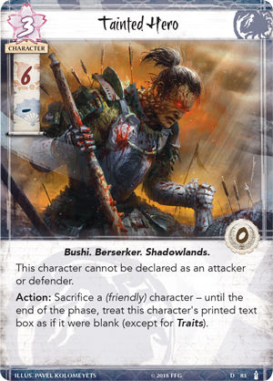
- 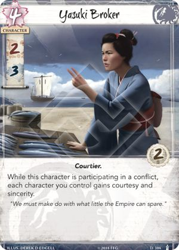
A card can have multiple instances of the same keyword, but functions as if it has one instance of that keyword.
- 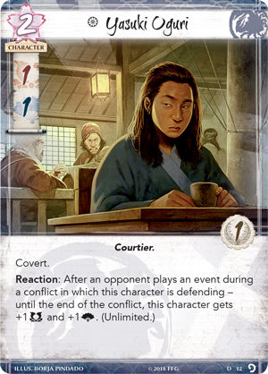
The Reaction on Yasuki Oguri can be triggered an Unlimited number of times per round, but only once per event played.
A reaction with a specified limit that enables it to be triggered more than once per round may only be initiated once each time its specified triggering condition occurs. - 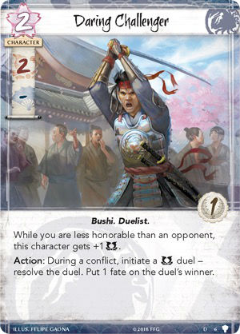

- 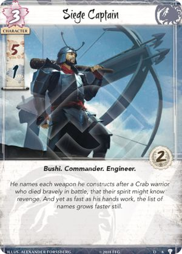
- 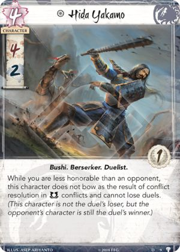
- 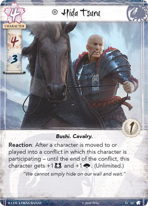
The Reaction on Hida Tsuru can be triggered an Unlimited number of times per round, but only once per character that moves
A reaction with a specified limit that enables it to be triggered more than once per round may only be initiated once each time its specified triggering condition occurs.If a card ability allows multiple characters to move (eg. Wild Stallion), Hida Tsuru can react once for each character that moves.
- 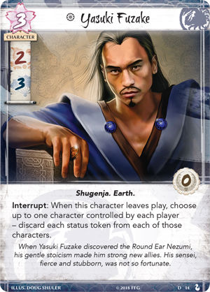
- 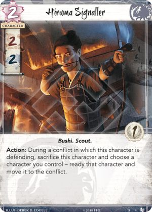
Hiruma Signaller can be used to ready a bowed character that is already participating in the conflict, or to move a ready character to the conflict. (readying is not dependent on moving, and vice versa).
- 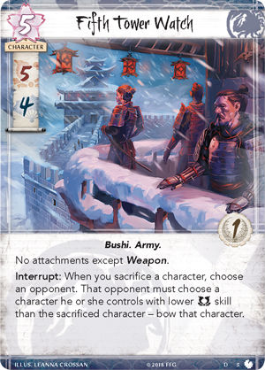
- 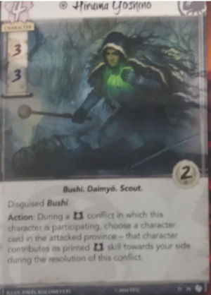
Disguised rulings
Disguised is an alternative method of playing a character. A Disguised character can be played normally, during the appropriate Action windows.
- If the non-unique character is participating in a conflict, the Disguised character may enter play in the conflict or at home.
- If the non-unique character is at home, the Disguised character must enter play at home.
- Only the physical components (Fate, Status token, attachments) get moved to the Disguised character after it enters play. Lasting effects (eg. skill bonuses such as Banzai! or Supernatural Storm) are not transferred to the Disguised character.
- With the Disguised keyword, you can only play the character during the conflict phase. (You can play them normally during the timing windows appropriate for that card.)
- Reactions to a Disguised character being played wait for the entire process to complete.
- All attachments move to the Disguised character, and are then checked to see if they are legally attached.
- All attachments move simultaneously. Therefore, if one attachment relies on a trait provided by a second attachment (eg. Iaijutsu Master and Seal of the Crane), both attachments will remain attached.Hiruma Yoshino cannot choose a character with a zero or dash military skill.If the character chosen by Hiruma Yoshino leaves the province and enters play (eg. Charge!), the discard pile (eg. Sabotage), or the dynasty deck (eg. Peasant's Advice), the lasting effect expires, and the character no longer contributes its skill.
If the character chosen by Hiruma Yoshino is moved from its current province to another of your provinces (eg. Asahina Takako), it will continue to contribute its military skill.
During a conflict at Sanpuku Seido, the character chosen by Hiruma Yoshino will count its printed glory instead of its military skill.
If the conflict type is switched to political (eg. Kuroi Mori), the chosen character will still count its printed military skill.
The character chosen by Hiruma Yoshino is not participating in the conflict, it is contributing its skill.
A player must count at least 1 total skill and there must be at least one participating character on his or her side in order to win a conflict. 
- 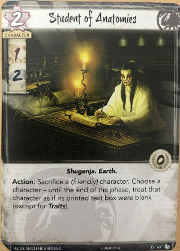
- 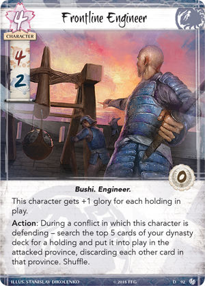
- 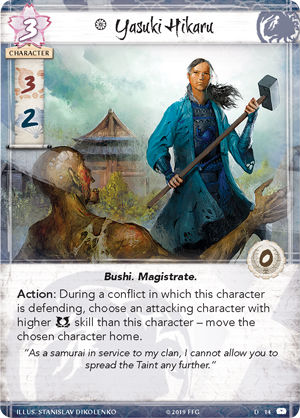
- 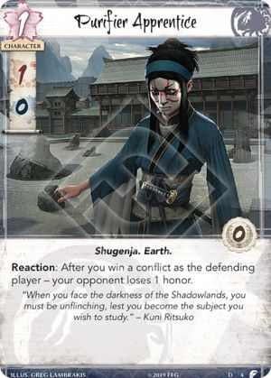
- 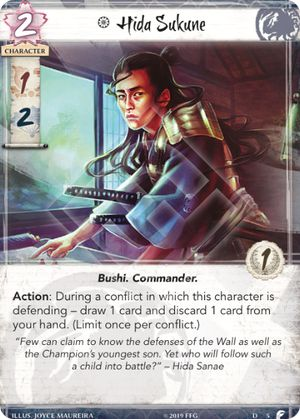
This card received official errata.
Should read: "draw 1 card, then discard 1 card from your hand.(Limit once per conflict.)"
(Replaces "draw 1 card and discard 1 card from your hand. (Limitonce per conflict.)") - 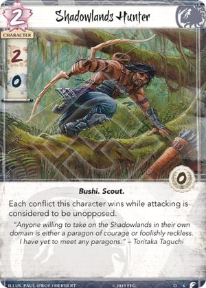
- 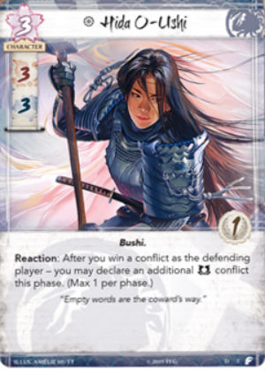
- 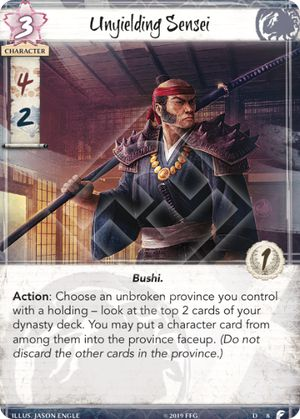
- 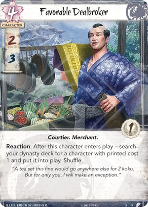
- 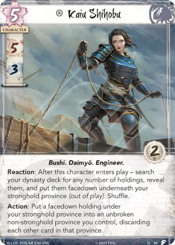
This card received official errata.
Should read: "Put a facedown holding under your stronghold province into play in an unbroken non-stronghold province..."
(Replaces "Put a facedown holding under your stronghold province into an unbroken non-stronghold province...") - 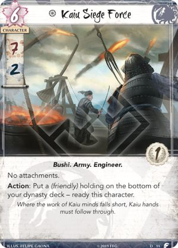
- 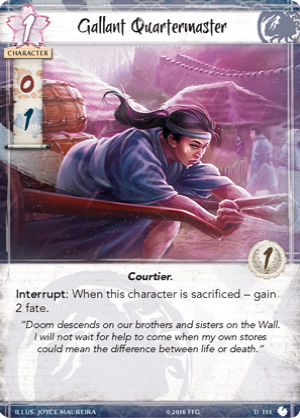
- 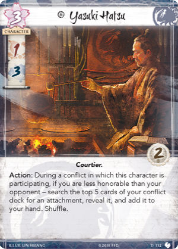
- 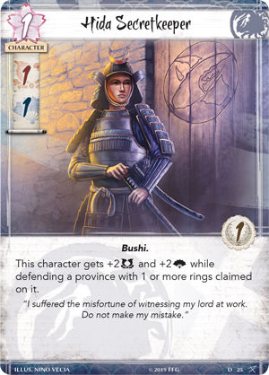
The constant ability on Hida Secretkeeper will only affect the game state in Enlightenment format (the only format where Rings are placed on provinces).
- 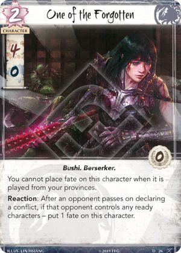
- 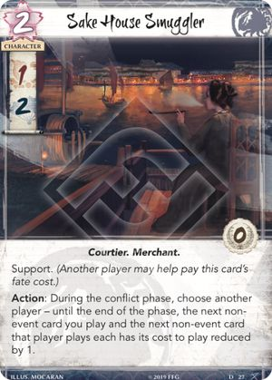
- 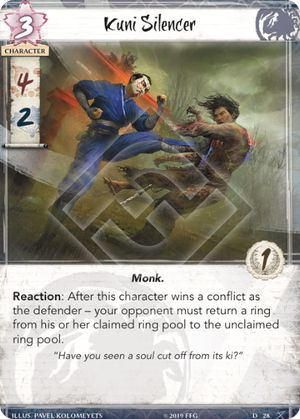

Hiruma Ambusher prevents "Action:", "Reaction:", and "Interrupt:" abilities from being triggered. Constant abilities and keywords are not affected.


You cannot trigger the Reaction on Hiruma Skirmisher when you put it into play by card effects. You can only do that when you play it. ('Play' and 'Put into play' are different things.)

Nezumi Infiltrator is not immune to the costs on Shadowlands cards (eg. Tainted Hero).
- 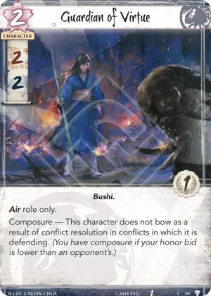
- 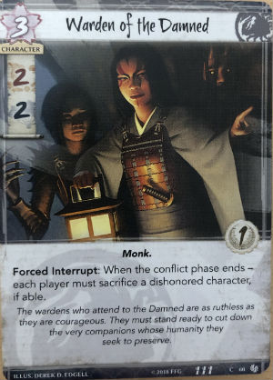
- 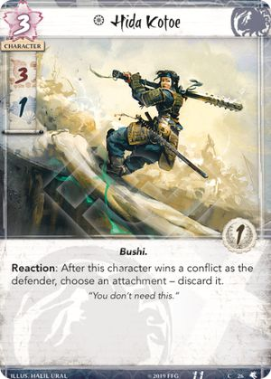

Reprieve’s effect can prevent a character from being sacrificed.
If that occurs during the payment of a cost, then that cost is not considered to have been paid as the sacrifice was prevented. If the sacrifice while paying an event’s cost is prevented, the effects do not initiate and that event remains unplayed in its owner’s hand.
If that occurs during the resolution of an effect, then nothing is dependent upon whether or not the sacrifice resolved successfully. In the same way that an event whose effects were canceled by Voice of Honor is still considered to have been played, a card like Way of the Crab is still considered to have been played even if its effects are prevented by Reprieve.
Players play cards from hand, or from provinces during the dynasty phase. Putting cards into play via card effects, or using abilities on non-Event cards, is not considered to be playing those cards.
If a player plays a card whose effects result in Watch Commander being discarded, its ability cannot be triggered as it is no longer in play.
If a player plays a card whose effects result in the attached ncharacter no longer participating in the conflict, Watch Commander’s ability cannot be triggered as the triggering condition is no longer met.The Reaction on Watch Commander can be triggered an Unlimited number of times per round, but only once per card played.
A reaction with a specified limit that enables it to be triggered more than once per round may only be initiated once each time its specified triggering condition occurs.Watch Commander can still trigger even if the effects of an event have been canceled (eg. Voice of Honor), since the event has still been played.
If the effects of an event card are canceled, the card is still considered to have been played, and it is still placed in its owner's discard pile.A second Watch Commander can be attached to a character.
The "Limit 1 per character" would then mean the first Watch Commander is discarded.

Pathfinder's Blade cancels *all* effects of a province's ability, even if it has multiple targets (e.g. Shameful Display).


Pit Trap received official errata.Should read: "Attach to a character. Play only on an attacking character."
(Replaces "Attach to an attacking character.")Card effects can be used to ready attached character during the Dynasty phase.

Set modifiers override all non-set modifiers (+/- and doubling/halving, even those applied afterwards), with the exception of the bid during a duel, which is always added after other calculations.
Skills that have been set cannot be switched (Along the River of Gold, Bayushi Yunako).
- 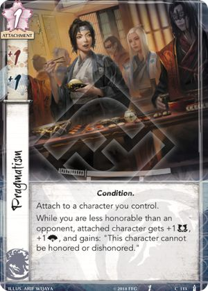
Pragmatism prevents the attached character from having their status changed by anything that honors or dishonors a character. "Cannot be dis/honored" prevents the act of being dis/honored, which is different to "Cannot become dis/honored" which prevents entering the dis/honored status.
- 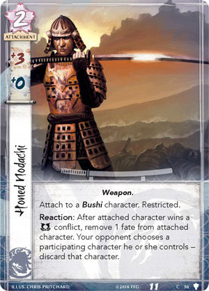
You can attach Honed Nodachi to an opponent's character, but you cannot remove a fate from the attached character to trigger its Reaction.
*When a player is paying a cost, the payment must be made with cards and/or game elements that player controls. The word "friendly" is used as a reminder of this in some costs.* - 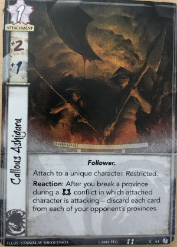
- 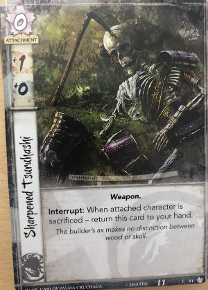
- 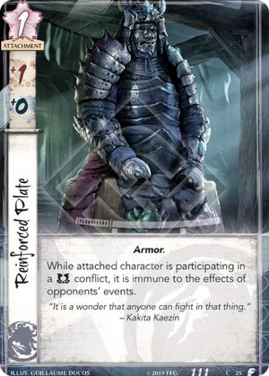
- 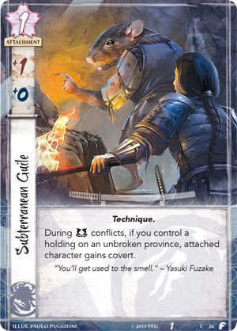
- 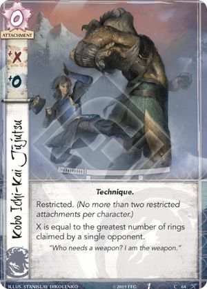

Your opponent must select an option that can change the game state (cannot choose to give fate if he has none).


Way of the Crab can be played during an action window in any phase of the round, including the Dynasty phase (you can use an eligible "Action:" ability instead of playing a character from a province), and the Fate phase (after characters with no fate are discarded).
Sacrificing a friendly character is the cost of Way of the Crab. By the time the ability's effects can be cancelled, costs have already been paid, and a friendly character has aready been sacrificed.
If the pre-dash sacrifice is prevented (e.g. by Reprieve), the ability is prevented from initiating. The event remains unplayed in its owner's hand. A failed initiation attempt does not count towards Limits and Maximums. The opportunity to act is passed to the opponent.
Way of the Crab targets an opponent, not a character, so cards like Above Question, Shiba Yojimbo, and Finger of Jade do not protect from this event.


Raise the Alarm cannot be played if all cards in the attacked province are already faceup.
The Action on Raise the Alarm puts a character into play, rather than playing it.
As such, you do not have to pay fate for the character, and you cannot add additional fate to the character.Raise the Alarm cannot be used to put a character with a dash (-) Military skill into the conflict.


If an opponent's ability instructs a player to *choose* a target, the character affected by Spreading the Darkness cannot be chosen. This also applies to abilities that instruct another player to choose targets (e.g. Court Games)).
Spreading the Darkness does not prevent the affected character from being sacrificed for Way of the Crab (that event doesn't instruct a player to *choose* a character, so it's non-targeting).A character targetted by Spreading the Darkness can still be targetted by ring effects. Ring effects are not card abilities.
- 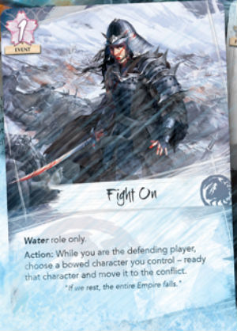
Fight On can be used to ready a bowed character that is already participating in the conflict (moving is not dependent on readying).
- 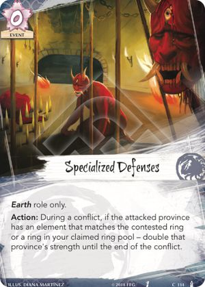
- 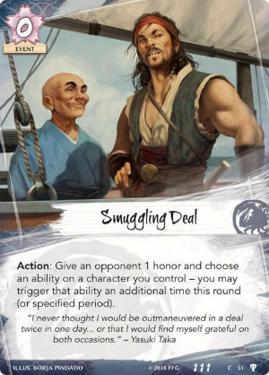
- 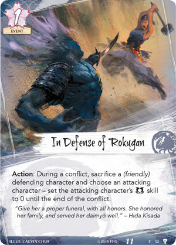
If the pre-dash sacrifice is prevented (e.g. by Reprieve), the ability is prevented from initiating. The event remains unplayed in its owner's hand. A failed initiation attempt does not count towards Limits and Maximums. The opportunity to act is passed to the opponent.
Sacrificing a friendly character is the cost of In Defense of Rokugan. By the time the ability's effects can be cancelled, costs have already been paid, and a friendly character has already been sacrificed.
- 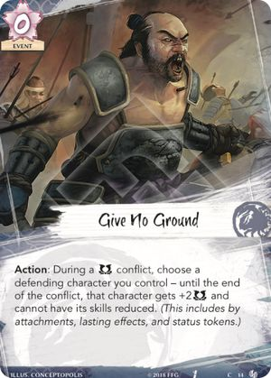

- 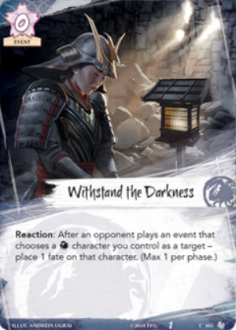
- 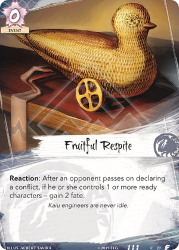
- 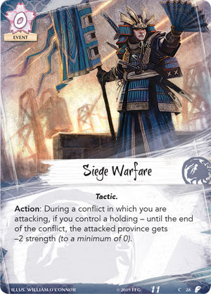

- 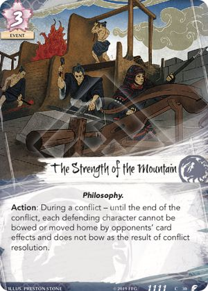
- 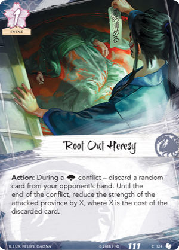
- 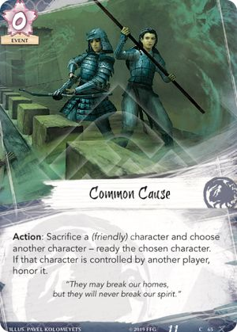
- 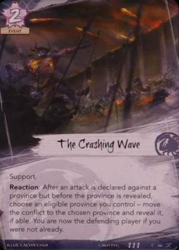
The Crashing Wave cannot be used to move the conflict to a province controlled by the attacking player. (An attacking player's province is not an \eligible\ province for their own conflict declaration.)

Shiro Nishiyama only affects characters that are already participating in the conflict. Any characters that enter the conflict after the ability has resolved are not affected.

If one of the three cards is a unique character, it cannot be discarded to add a fate to a copy of that character in play. The card is never in your province.
A duplicate is a copy (in a player's hand or provinces) of a unique character.
Borderlands Fortifications cannot switch places with the stronghold.


This card has been banned.
"Seeker/Keeper only" is a deckbuilding restriction. You can take control of cards that do not match your role.
"Choose an attachment on a character that player controls". So the other player needs to control the character, not the attachment.
If you take control of an opponent's unique attachment (e.g. Talisman of the Sun), neither player can play another copy of that attachment (because each player either owns or controls a copy in play).
If you control a unique attachment, you can attempt to take control of another copy of that attachment. Since you cannot take control of it, it will be discarded.

IIron Mine’s effect can prevent a character from being sacrificed.
If that occurs during the payment of a cost, then that cost is not considered to have been paid as the sacrifice was prevented. If the sacrifice while paying an event’s cost is prevented, the effects do not initiate and that event remains unplayed in its owner’s hand.
If that occurs during the resolution of an effect, then nothing is dependent upon whether or not the sacrifice resolved successfully. In the same way that an event whose effects were canceled by Voice of Honor is still considered to have been played, a card like Way of the Crab is still considered to have been played even if its effects are prevented by Reprieve.
Your opponent must select an option that can change the game state (cannot choose to bow a bowed character, or remove fate from a character with no fate).
This card received official errata.
Should read: "your opponent discards 2 random cards from their hand, then draws 1 card."
(Replaces "your opponent discards 2 random cards from his or her hand and draws 1 card.")The Reaction on Watchtower of Valor can be triggered an Unlimited number of times per round, but only once per defensive conflict win.
A reaction with a specified limit that enables it to be triggered more than once per round may only be initiated once each time its specified triggering condition occurs.
Kuni Wasteland prevents Action:, Reaction:, and Interrupt: abilities from being triggered. Constant abilities are not affected.
Kuni Wasteland does not prevent Forced abilities (eg. Isawa Ujina) from triggering (as those abilities are triggered by the game).
Kuni Wasteland does not prevent abilities on out-of-play characters (eg. Feral Ningyo) from triggering.
Kuni Wasteland prevents all keywords on in-play characters during conflicts at the province. This is mostly covert and pride, though it could also stop courtesy and/or sincerity if a character were to leave play during the conflict.
Kuni Wasteland does not prevent Disguised, as the Disguised character is out-of-play.The Interrupt on Slaughtered Village can only be triggered in Enlightenment format (the only format where Rings are placed on provinces).
- Crane Clan


Savvy Politician triggers when it changes status from Dishonored to Ordinary, or from Ordinary to Honored ("is honored" is different from "becomes honored").
Savvy Politician’s ability does not trigger if an honored status token is moved to it by a card ability. It only triggers if an effect "honors" it.


You cannot move a character to a conflict if that character cannot participate in that conflict (has a dash (–) for a skill, or a relevant constant ability, e.g. Shiba Peacemaker, Pacifism).

When counting a current skill total, ignore bowed characters, but take Imperial Favor into account.
If a Magistrate makes some characters not count their skill toward the resolution of the conflict, they don't count for Kakita Asami's ability either.

Bowed characters do not contribute their skill whenever you count skill totals, but they still have their individual skill values (for duels, Outwit/Rout, etc.)

A card can have multiple instances of the same keyword, but functions as if it has one instance of that keyword.

This card has been banned.
The conflict ends only after all participating characters move home bowed, so Guest of Honor prevents your opponent from playing any events that react to winning/losing the conflict, breaking a province, resolving ring effects, or claiming the contested ring.
Declaring the type and element of the conflict, the attacked province, attacking characters, and covert targets, are all considered to be performed simultaneously, and they all share the same reaction window.
Guest of Honor will prevent an opponent from playing Reactions to a conflict being declared (Mantra of Fire etc.), if she is already attacking, thus participating.
You can include 3 copies of Doji Hotaru (Core Set), or 3 copies of Doji Hotaru (Justice for Satsume), or any combination of each, so long as you include no more than 3 copies in total.
No more than 3 copies of a single card by title can be included in any combination in a player's dynasty and conflict decks.

The ability on Kabuki Hero can only be triggered during a conflict.
A lasting effect that expires at the end of a specified time period can only be initiated during that time period.
Kakita Yoshi's ability can only be used if you control the Imperial Favor. Discarding it is a cost of the ability.
When you discard the Imperial Favor, return it to the unclaimed state.
Only the fate cost of events is reduced, not any additional costs of abilities on those events.

If the Crane player wins the Imperial Favor, but the Scorpion player is going to discard Fawning Diplomat during the fate phase, whether Doji Shizue is discarded or not depends on who is the first player.
- During the fate phase, the first player discards his characters with no fate first (one by one), then the second player, then 1 fate is removed from each remaining character simultaneously."Cannot be discarded" does not prevent Doji Shizue from being sacrificed for Way of the Crab. 'Discard' and 'sacrifice' are different game terms."

Moving status tokens between characters via card abilities is not considered to be honoring or dishonoring them – although they do become honored or dishonored. So, Savvy Politician's ability would not trigger. If an honored status token is moved to a dishonored character, both tokens are discarded. An honored status token cannot be moved to an honored character.


When your opponent plays an event, first you get a chance to cancel its effects (with e.g. Voice of Honor), then you can trigger Shigeru's ability and make the opponent discard a card.
The Reaction on Doji Shigeru can be triggered an Unlimited number of times per round, but only once per event played.
A reaction with a specified limit that enables it to be triggered more than once per round may only be initiated once each time its specified triggering condition occurs.
If the Air ring is affected by one player's Secluded Shrine, but is physically in another player's claimed pool, both players are considered to have it claimed. In this case, Fū Sui Disciple's controller may choose against which player to resolve its ability.
"Ordinary" means neither honored nor dishonored.
Asahina Takamori can trigger his Reaction to his own entering play.

Ikebana Artisan received official errata. The text after the dash should read: "cancel that honor loss. Then, lose 1 fate. (Unlimited.)"
(Replaces "lose 1 fate instead. (Unlimited.)")Ikebana Artisan can be triggered even if you have no fate.
The Reaction on Ikebana Artisan can be triggered an Unlimited number of times per round, but only once per conflict.
A reaction with a specified limit that enables it to be triggered more than once per round may only be initiated once each time its specified triggering condition occurs.When Callow Delegate leaves play, it can honor itself to give you 1 honor.
When Callow Delegate leaves play while its controller also has an Asahina Storyteller in play, that player will not draw a card for Sincerity on the character that Callow Delegate honors with its interrupt.
If Callow Delegate has a Cloud the Mind attached, you will not be able to honor a character when it leaves play.
The Interrupt on Callow Delegate is triggered before the character leaves play, but the Cloud the Mind is discarded as the character leaves play.Tengu Sensei can still trigger its Reaction if the effect of Covert has been cancelled (eg. Finger of Jade), because the character was still chosen.
Abilities that cancel an ability that targets a character (eg. Shiba Yojimbo, Finger of Jade) cannot be used to cancel the Reaction on Tengu Sensei, as it does not choose/target the character.
This card received official errata
Should read: "During a conflict in which this character is participating on your side alone"The action on Paragon of Grace can be triggered if it is the only character participating on its side of the conflict.
It does not need to be the only character participating in the conflict (ie. unopposed).If a participating character’s skill values are dependent upon players’ honor bids, Kakita Toshimoko’s interrupt ability can alter the calculation of skill totals in step 3.2.3 before fully resolving that step by changing those players’ bids and potentially changing which player wins or loses the conflict due to the change in skill values.
- Because interrupts resolve before their triggering condition (page 11), and because "would" effects have the capability to change the triggering condition, Toshimoko’s ability has the potential to change the outcome of step 3.2.3. Therefore, if: a character’s skill values are dependent upon the players’ honor bids, Toshimoko’s duel changes those bids, and he loses the duel, then it is possible that Toshimoko could lose the duel but win the conflict (if up against a Sincere Challenger who loses composure in a political conflict, for example, or by being honored by Kyūden Kakita). It is also possible that recalculating skill values for step 3.2.3 due to Toshimoko’s ability could cause a province that would originally be breaking to no longer be breaking if the loss of skill (or increase of Toshimoko’s skill) causes the attacking player to not have the excess skill necessary to cause the province to break.If a character "cannot receive dishonored status tokens", then those tokens cannot be placed on or moved to that character. That character cannot be dishonored if it is ordinary.
Master of Keepsakes cannot prevent a character from going from honored to ordinary. The honored character does not receive a dishonored status token when it is dishonored.
When an honored character is dishonored, it loses its honored status, discards the status token, and returns to ordinary status.You cannot trigger the Reaction on Asahina Takamori when you put a Crane character into play by card effects. You can only do that when you play a Crane character. ('Play' and 'Put into play' are different things.)
You cannot trigger the Reaction on Benevolent Host when you put them into play by card effects. You can only do that when you play them. ("Play" and "Put into play" are different things.)
This card received official errata.
Should read: "While this character is honored, you may play each character in your provinces as if it were in your hand."
(Removed "reducing its cost by 1.")His ability plays a character "as if it were in your hand", and characters can only be played from provinces during the Dynasty phase.
The Reaction on Winter Court Hosts can be triggered an Unlimited number of times per round, but only once per card played.
A reaction with a specified limit that enables it to be triggered more than once per round may only be initiated once each time its specified triggering condition occurs.You can include 3 copies of Doji Hotaru (Core Set), or 3 copies of Doji Hotaru (Justice for Satsume), or any combination of each, so long as you include no more than 3 copies in total.
No more than 3 copies of a single card by title can be included in any combination in a player's dynasty and conflict decks.The Reaction on Doji Hotaru can be triggered an Unlimited number of times per round, but only once per card played.
A reaction with a specified limit that enables it to be triggered more than once per round may only be initiated once each time its specified triggering condition occurs.The next action opportunity ends when the reaction window to that action closes.
Therefore, all Interrupts and Reactions will also have their cost increased by 1.
All additional actions (eg. Current of the Beryt) are resolved within the first action opportunity, so will also have their cost increased by 1.The next action opportunity ends when the reaction window to that action closes.
Therefore, all Interrupts and Reactions will also have their cost decreased by 1.
All additional actions (eg. Current of the Beryt) are resolved within the first action opportunity, so will also have their cost decreased by 1.Disguised rulings
Disguised is an alternative method of playing a character. A Disguised character can be played normally, during the appropriate Action windows.
- If the non-unique character is participating in a conflict, the Disguised character may enter play in the conflict or at home.
- If the non-unique character is at home, the Disguised character must enter play at home.
- Only the physical components (Fate, Status token, attachments) get moved to the Disguised character after it enters play. Lasting effects (eg. skill bonuses such as Banzai! or Supernatural Storm) are not transferred to the Disguised character.
- With the Disguised keyword, you can only play the character during the conflict phase. (You can play them normally during the timing windows appropriate for that card.)
- Reactions to a Disguised character being played wait for the entire process to complete.
- All attachments move to the Disguised character, and are then checked to see if they are legally attached.
- All attachments move simultaneously. Therefore, if one attachment relies on a trait provided by a second attachment (eg. Iaijutsu Master and Seal of the Crane), both attachments will remain attached.The conflict ends only after all participating characters move home bowed, so Doji Kuzunobu prevents players from triggering reactions to winning/losing the conflict, breaking a province, resolving ring effects, or claiming the contested ring.
Doji Kuzunobu does not prevent Forced Reactions, as they are triggered by the game, and not by a player.

If a character "cannot receive dishonored status tokens," then those tokens cannot be placed on or moved to that character. That character cannot be dishonored if it is ordinary.
Steward of Law prevents a dishonored status token from transferring to a Disguised character after it enters play via the Disguised keyword.


Young Harrier's ability only affects characters that are already in play. Any characters that enter play after her ability has resolved are not affected.
Young Harrier prevents your affected Crane characters from having their status changed by anything that dishonors a character.
"Cannot be dishonored" prevents the act of being dishonored, which is different to "Cannot become dishonored" which prevents entering the dishonored status.
Menacing Iron Warrior's ability applies a lasting effect to a set of characters that meet the specified criteria (participating, lower military skill) at the moment the ability resolves. The lasting effect persists on affected characters until it expires at the end of the conflict, even if Menacing Iron Warrior leaves the conflict before that.

If an opponent's event instructs a player to *choose* a target, the character with Above Question cannot be chosen. This also applies to events that instruct another player to choose targets (e.g. Court Games)
Above Question does not prevent attached character from being sacrificed for Way of the Crab (that event doesn't instruct a player to *choose* a character, so it's non-targeting)."
If Above Question is played on an opponent’s character, that opponent cannot choose the attached character as a target for their own events.
If the attached character is the only participating character controlled by that opponent, Court Games’s honoring effect cannot be selected, as the attached character cannot be chosen as a target.
Bowed characters do not contribute their skill whenever you count skill totals, but they still have their individual skill values (for duels, Outwit/Rout, etc.)
You can only choose and discard cards if you actually have enough cards.You can either give honor or discard cards, but not a combination of both.
Duelist Training can be used to challenge a character to a duel, even if one or both of the participants are already bowed.
The general "once per round" limit applies to each ability granted by a specific copy of Duelist Training to a specific character. One character can use abilities provided by multiple copies of Duelist Training (they are considered to be different abilities, since they are provided by different attachments). If the same copy of Dueling Training leaves and re-enters play, it is considered to be a new copy (leaving play resets the limit). If a character uses the ability provided by Duelist Training, then the attachment is moved to another character (by Giver of Gifts or Calling in Favors), that other character can use the ability (it is considered to be a different ability, since it is on a different character). If a character uses the ability provided by Duelist Training, then the attachment is moved to another character, then back to the original character, that character cannot use the ability again (it is considered to be the same ability, since it is provided by the same attachment to the same character).

Height of Fashion can be played during the action window before a conflict (between steps 3.1 and 3.2), or during action windows in Draw, Fate, or Regroup phases.


If the card revealed by Pillow Book is moved to another game zone and is no longer the top card of the deck, the lasting effect applying to it expires, and you can no longer play it.

If attached character's glory becomes lower than 2 (e.g. due to Isawa Mori Seido's effect expiring), Formal Invitation becomes illegally attached and is discarded

The Mirror's Gaze says "ignore costs and triggering conditions". Costs are instructions like "Bow", "Spend", "Sacrifice", etc. Triggering conditions say "After", "When", "If". All of these are ignored. However, the pre-dash part of an ability might also contain play restrictions ("During", "While"), targeting requirements ("Choose"), or selections ("Select") - these are not ignored and must be fulfilled.
The Mirror's Gaze cannot copy an event if its effects or targetting requirements reference its cost or triggered condition (by using the words "it", "that", or "those") (exception: Calling in Favors, see below)..
The Mirror's Gaze cannot be used to copy the following events, either because their effects or targetting restrictions reference their costs or triggering conditions (by using the words "it", "that", or "those"), or because they have play restrictions ("During", "While") that cannot be fulfilled by both players at the same time:
- Interrupts: Any whose effects cancel a card effect or framework step.
- Reactions: Curry Favor, Display of Power, Indomitable Will, Ready for Battle, Way of the Chrysanthemum.
- Actions: Chasing the Sun, Harmonize, I Am Ready, I Can Swim, Raise the Alarm, Rebuild, Test of Skill.The Mirror's Gaze can copy Breakthrough only if you've already initiated or passed exactly one conflict this phase. After your opponent plays Breakthrough and you Mirror it, you must wait for them to resolve their second conflict, before you get to initiate yours (effectively you just skip action windows between conflicts).
The Mirror's Gaze can copy Calling in Favors. Since costs are ignored, there is no "that" character to attach the attachment to, so you have to discard it.
If The Mirror's Gaze copies an event with a Max (e.g. Banzai!), it counts towards the Max (so you cannot mirror an opponent's Banzai! and play a Banzai! of your own during the same conflict).
Isawa Tadaka does not prevent you from using The Mirror's Gaze to copy an opponent's event if you have another copy of it in your discard pile.
When you use The Mirror's Gaze to copy an opponent's event, the copy is considered to be *your* event, so your opponent can use their own Mirror's Gaze to copy the copy.
If The Mirror's Gaze copies a Limited event (e.g. Dispatch), it is NOT considered to be your one Limited card per round.Effects that modify the value of the honor bid only affect the current bid, the setting on the dial is not physically adjusted.


If the effects of an ability are canceled, the ability is still considered to have been used, and any costs have still been paid.


If a participating character is bowed, it is still considered participating.

Sacrificing a friendly character is the cost of Noble Sacrifice. By the time the ability's effects can be cancelled, costs have already been paid, and a friendly character has aready been sacrificed.
If the pre-dash sacrifice is prevented (e.g. by Reprieve), the ability is prevented from initiating. The event remains unplayed in its owner's hand. A failed initiation attempt does not count towards Limits and Maximums. The opportunity to act is passed to the opponent.

The bonus provided by Disdainful Remark is fixed upon resolution. If the number of cards in the opponent's hand subsequently changes, the bonus is not affected.

Curry Favor is played after participating characters bow and move home at the end of a conflict, so Guests of Honor and Watch Commanders do not interact with Curry Favor.

If you play Test of Skill from the top of your deck (with a card such as Artisan Academy or Pillow Book), it will take up one of the "revealed card slots" in its cost, but be ineligible to be put into your hand by its effect.
- When an event card is played, it is considered to remain in its original zone until its cost has successfully been payed, at which point it gets placed onto the table in a state of "being played" before being placed in its owner’s discard pile after its effects resolve. Therefore, during the payment of the Test of Skill’s cost, it is still on top of your deck and will be revealed as part of the cost of playing the event.
While it is already revealed by the Academy or Pillow Book, it can still be revealed again to satisfy its own cost. However, once it leaves the top of your deck (after paying costs and choosing targets in step 5—see "Initiating Abilities"), it no longer becomes "one of the revealed cards" and cannot be put back into your hand. For more information, see "In Play and Out of Play".If your Duelist wins a duel against multiple opponents (eg. Mirumoto Hitomi), you choose one of the losing characters to be affected by Insult to Injury.

If the initial honor is redirected by Young Rumormonger, the post-Then effect does not resolve.

The card is named in Step 7, after the opportunity to play cancels has passed (Step 6).
This card received official errata.
Should read: "discard an honored status token" (Replaces "discard an honor token")If your opponent's action results in additional actions (eg. [awk Tattoo), or the playing of multiple cards (eg. Invoke the Divine), those actions (or those cards) are fully resolved/played before the conflict resolves.

If the dishonor for refusing Duel to the Death is prevented (eg. Young Rumormonger), the refusal is still successful.


If the card revealed by Artisan Academy is moved to another game zone and is no longer the top card of the deck, the lasting effect applying to it expires, and you can no longer play it.

A political conflict declared against the province with Chisei District can be switched to military (e.g. via Rally to the Cause).
Chasing the Sun and Talisman of the Sun can move the contested ring to a province with Chisei District during a military conflict.
Kakita Dojo prevents Action:, Reaction:, and Interrupt: abilities from being triggered. Constant abilities and keywords are not affected.


The sharing of clan affiliation with your opponent's participating character refers to both events and attachments.
The Interrupt on Model of Courtesy can only be triggered in Enlightenment format (the only format where Rings are placed on provinces).
- Dragon Clan


Agasha Swordsmith can only find a card with the printed attachment cardtype. Monk characters that can be played as attachments (Tattooed Wanderer, Togashi Kazue) are not attachments while they're out of play.

Only one character can be declared as a defender, but other characters can be played into or moved to the conflict.


Seeker of Enlightenment gets a bonus for each ring in the unclaimed ring pool. The currently contested ring does not count.

Enlightened Warrior can only trigger after an opponent selects a ring with fate on it when declaring a conflict. Switching rings via card effects (e.g. Know the World) does not trigger him.

"Max 1 per conflict" means that you can only trigger one Kitsuki Investigator per conflict, even if you control several of them.

Bowed characters do not contribute their skill whenever you count skill totals, but they still have their individual skill values (for duels, Outwit/Rout, etc.)


You can attach a third Restricted attachment to Niten Master, discard one of them so that there are only two left, then trigger Niten Master's ability.
Niten Master can trigger whenever a "Weapon" attachment becomes attached to him (even if the effect says "move" etc.)

If Togashi Yokuni has Way of the Dragon attached, he cannot use his own ability twice (because it says "Max", not "Limit"), but he can use the gained ability twice. "Max" is per ability per card title per player.
If Togashi Yokuni gains the ability of Kitsuki Investigator, both characters can use that ability this round (they have different titles).
If Yokuni gains the ability of an opponent's Yokuni, he cannot use that ability (no infinite loop).
If Togashi Yokuni gains an ability that potentially allows him to enter a players hand of conflict cards (eg. Adept of Shadows), the ability will not allow him to actually enter the conflict hand. He would instead enter his owner's discard pile.
*This is a reversal to a previous ruling.*Togashi Yokuni can gain an ability printed on a character that is blanked by Cloud the Mind.
Togashi Yokuni cannot gain the ability of Togashi Kazue. Kazue has a constant ability while she's a character, not a triggered ability.
Togashi Yokuni can only target characters in play, not in provinces or discard piles. "Card abilities only interact with, and can only target, cards that are in play, unless the ability specifically refers to an out-of-play area or element."
Togashi Yokuni targets an ability, not a character, so cards like Shiba Yojimbo and Finger of Jade do not protect from Yokuni's ability.

If Kitsuki Yaruma enters play during a conflict (e.g. via Charge!) and turns the attacked province facedown, it is immediately turned faceup.
Turning a province facedown effectively makes it leave play. Thus, any abilities on that province can be used again (limits are reset), and lasting effects affecting that province expire (e.g. Ride Them Down, Disdainful Remark), and any tokens on that province are discarded (e.g. Public Forum).

Immunity only protects from effects. A card that is immune to events can still be used to pay an event card’s cost.
Event effects can still affect an immune card indirectly, by affecting its peripheral entities (tokens, attachments, triggered abilities), e.g.:- Consumed by Five Fires can remove fate from an immune card.- Calling in Favors can dishonor an immune card (as a cost) and attach an attachment to it.

Enigmatic Magistrate only affects even-costed characters by negating their skill. It does not ever make odd-costed characters contribute their skill in circumstances when they would not normally do so.


Itinerant Philosopher's ability can only be used if you control the Imperial Favor. Discarding it is a cost of the ability.
When you discard the Imperial Favor, return it to the unclaimed state.


The defending player chooses the element from the options available to the attacking player, i.e. among the unclaimed rings, and accounting for any restrictions (e.g. Way of the Phoenix).
The attacking player is still the one who 'selects' the ring, so the defending player can trigger Enlightened Warrior.
If the attacking player only controls a ready character that has a restriction on which ring it can declared to attack with (eg. Fire Tensai Acolyte), the defending player must select the appropriate ring to make the attack valid.

Master Alchemist can be used to place fate on the Fire ring while it is contested or claimed. Fate will stay on rings up until the point at which they become contested. If the ring is already being contested when fate is added to it, the attacker will not gain that fate.

Volcanic Troll gets the bonus while the Fire ring is in the unclaimed pool. Contested and unclaimed are different states.
If an event played via Togashi Mitsu has its effects cancelled, it is not put on the bottom of the conflict deck, as its effects did not resolve. The card remains in the discard pile, as the top (most recently played) card.
You do not need to pay for the attachment that Agasha Shunsen searches for. It is considered to be put into play, rather than played.
Because the attachment is being put into play, any play requirements (Infiltrator, Liar's Mask) can be ignored.
A card that has been put into play is not considered to have been "played."Agasha Shunsen can put into play an attachment with a dash cost (eg. Daimyo's Gunbai))
This card received official errata.
Should read: "If you do, ready this character."
(Replaces "Then, ready this character")Kitsuki Shomon cannot trigger her ability to ready if she is already dishonored.
She is not able to redirect the dishonor to herself, as it is not a valid game state change, and thus the pre-Then text will not be fulfilled.Prudent Challenger can initiate its duel, even if neither participant has an attachment attached to them.
The province that is chosen by Agasha Taiko’s ability cannot be declared as the attacked province and the conflict cannot be moved to it.
If Agasha Taiko is played during a conflict and chooses the currently attacked province for her ability, the conflict immediately ends with no winner and all participating characters are moved home bowed.You cannot trigger the Reaction on Agasha Taiko when you put them into play by card effects. You can only do that when you play them. ("Play" and "Put into play" are different things.)

Kitsuki Jusai can only trigger his reaction when multiple dials are revealed, and not when only a single dial is revealed (eg. Maze of Illusion).
Card effects that modify a bid value (eg. Contingency Plan) do not affect the reaction on Kitsuki Jusai.
If a card ability references a player’s honor bid, the ability is referencing the current setting on the player’s honor dial.Kitsuki Yuikimi is considered to be participating in the conflict as soon as she is declared as an attacker. Therefore, she can trigger her reaction when fate is gained from the ring becoming contested during conflict declaration.
Trusted Advisor is considered to be participating in the conflict as soon as she is declared as an attacker. Therefore, she can trigger her reaction when fate is gained from the ring becoming contested during conflict declaration.
Disguised rulings
Disguised is an alternative method of playing a character. A Disguised character can be played normally, during the appropriate Action windows.
- If the non-unique character is participating in a conflict, the Disguised character may enter play in the conflict or at home.
- If the non-unique character is at home, the Disguised character must enter play at home.
- Only the physical components (Fate, Status token, attachments) get moved to the Disguised character after it enters play. Lasting effects (eg. skill bonuses such as Banzai! or Supernatural Storm) are not transferred to the Disguised character.
- With the Disguised keyword, you can only play the character during the conflict phase. (You can play them normally during the timing windows appropriate for that card.)
- Reactions to a Disguised character being played wait for the entire process to complete.
- All attachments move to the Disguised character, and are then checked to see if they are legally attached.
- All attachments move simultaneously. Therefore, if one attachment relies on a trait provided by a second attachment (eg. Iaijutsu Master and Seal of the Crane), both attachments will remain attached.The fate comes from the general token pool.
You cannot trigger the Reaction on Togashi Gaijutsu when you put a Tattoo attachment into play by card effects. You can only do that when you play a card. ("Play" and "Put into play" are different things.)
Monastery Protector applies it 1 fate cost to all of your opponent's events, even those that instruct another player to choose targets (e.g. Court Games).
The Reaction on Mindful Warrior can only be triggered in Enlightenment format (the only format where Rings are placed on provinces).

Characters played as attachments do not provide their printed skills as bonuses.
They lack the "+" or "–" symbol before the value, so do not add their skills to the attached character. And only characters contribute their skill to a conflict (Tattooed Wanderer is considered to be an attachment rather than a character).A card can have multiple instances of the same keyword, but functions as if it has one instance of that keyword.

Characters played as attachments do not provide their printed skills as bonuses.
They lack the "+" or "–" symbol before the value, so do not add their skills to the attached character. And only characters contribute their skill to a conflict (Togashi Kazue is considered to be an attachment rather than a character).
Characters played as attachments do not provide their printed skills as bonuses.
They lack the "+" or "–" symbol before the value, so do not add their skills to the attached character. And only characters contribute their skill to a conflict (Ancient Master is considered to be an attachment rather than a character).The reaction on Ancient Master can still be triggered, even if the attached character has been removed from the conflict before the controlling player's opportunity to take the reaction.
Niten Pupil triggers its reaction after step D.4, which is before values are compared in step D.7.
All chosen cards must be in the same discard pile.
Characters played as attachments do not provide their printed skills as bonuses.
They lack the "+" or "–" symbol before the value, so do not add their skills to the attached character. And only characters contribute their skill to a conflict (Togashi Acolyte is considered to be an attachment rather than a character).When played as an attachment during a conflict, Togashi Acolyte can trigger its reaction to itself entering play.
You cannot trigger the Reaction on Togashi Acolyte when you put a card into play by card effects. You can only do that when you play a card. ('Play' and 'Put into play' are different things.)
The Reaction on Togashi Acolyte can be triggered an Unlimited number of times per round, but only once per card played.
A reaction with a specified limit that enables it to be triggered more than once per round may only be initiated once each time its specified triggering condition occurs.
An Ancestral attachment only goes to your hand if the card it is attached to leaves play. If an Ancestral attachmentis is discarded by a card effect (e.g. Let Go or Miya Mystic) or due to a character having three of more Restricted atachments, it goes into the discard pile as normal.
If you take control of an Ancestral attachment (e.g. via Calling in Favors), when the card it is attached to leaves play, the attachment goes to its owner's hand.

Daimyo's Favor can reduce the cost of characters played as attachments (Tattooed Wanderer, Togashi Kazue).

An Ancestral attachment only goes to your hand if the card it is attached to leaves play. If an Ancestral attachment is discarded by a card effect (e.g. Let Go or Miya Mystic) or due to a character having three of more Restricted atachments, it goes into the discard pile as normal.
If you take control of an Ancestral attachment (e.g. via Calling in Favors), when the card it is attached to leaves play, the attachment goes to its owner's hand.

Way of the Dragon does not work with abilities that say "Max X per period" ("Limit" applies to one particular card, "Max" applies to all cards with the same title).
Way of the Dragon does not use the word *printed*, so abilities gained from other cards (eg. Duelist Training) can also be triggered an additional time.
Way of the Dragon increases the limit of the number of times an ability can be triggered. If a character triggers an ability the maximum allowed times, and Way of the Dragon subsequently leaves play (eg. Let Go), the limit will drop back to its printed amount. Attaching a new Way of the Dragon will again increase the limit, but will not allow an additional trigger of the ability, since the limit was previously reached.
A second Way of the Dragon can be attached to a character.
The "Limit 1 per character" would then mean the first Way of the Dragon is discarded.


Fate stays on rings even while they're contested or claimed.
When attached character becomes bowed, your opponents do not take fate from contested or claimed rings. Fate is only taken when a ring transitions to the contested state.
The Stone of Sorrows prevents the opponent from using Jade Masterpiece.

Ancestral attachments only go to your hand if the card it is attached to leaves play. If an Ancestral attachmentis is discarded by a card effect (e.g. Let Go or Miya Mystic) or due to a character having three of more Restricted atachments, it goes into the discard pile as normal.
A second Adopted Kin can be attached to a character. The "Limit 1 per character" would then mean the first Adopted Kin is discarded.


Hawk Tattoo received official errata. Should read: "Attach to a character you control."
(Added "Attach to a character you control.")You cannot move a character to a conflict if that character cannot participate in that conflict (has a dash (–) for a skill, or a relevant constant ability, e.g. Shiba Peacemaker, Pacifism
"..1 or more other characters you control..." refers to the controller of the attachment, regardless of who controls the character it is attached to.
This card has been banned.
If a character has Mirumoto Daisho attached, another restricted attachment can be played on the character, but it will immediately be discarded.
If a second Mirumoto Daisho is attached to a character, the text on both attachments ( ...character may not have other restricted attachments...) will apply simultaneously, and both Daishos will be discarded.
Mirumoto Daisho only affects the number your opponent can select on their dial during the initial honor bid (step D.3).
Card abilities that alter the value on the dial (eg. Contingency Plan), or change the bid on the dial (eg. Ide Negotiator) can still be triggered to change the final result.Greater Understanding can be triggered by cards that *move* fate to the ring (eg. Jade Masterpiece).
The cards in your hand are placed at the bottom of your conflict deck before you draw.
After you play an interrupt or reaction event that targets a character with Dragon Tattoo attached, the tattoo can be used to play that event again. The interrupt or reaction event is played during the interrupt/reaction window that the card was originally played in.
When an interrupt or reaction is played in this way, it is "queued" into the appropriate interrupt/reaction window, but is not actually played until the reaction window for playing the original event closes. Therefore, cards like Watch Commander (Core, 133) will trigger after the first instance of the event but before the second instance of the event—this is different from when Dragon Tattoo plays an action event, as an Action event (such as Hurricane Punch) is fully played and resolved within the resolution of Dragon Tattoo’s ability.Dragon Tattoo can be used to play an event that had its effects cancelled (eg. Censure).
Dragon Tattoo plays the event again, so cannot be used to play an event with a Max restriction (eg. Banzai!).
Contemplative Wisdom will give the chosen character all printed abilities, regardless of type. This includes actions, constant abilities, interrupts, keywords, and reactions.
Contemplative Wisdom can give the chosen character the printed abilities if the attached character is blanked by Cloud the Mind.


Reactions to a conflict being declared, to attackers committing to the conflict, and to a province being revealed, all share the same reaction window (first player gets the first opportunity to trigger their reaction).
Mantra of Fire can be played if your opponent declared a Fire conflict - doesn't matter if the contested ring was subsequently switched by Elemental Fury.

Tranquility applies a lasting effect "Cannot use triggered abilities" to each character that is at your opponent's home during the event's resolution. It does not create a blanket effect.If a character enters the opponent's home after Tranquility resolves, it can trigger its abilities, because it was not affected.If a character that was at the opponent's home when Tranquility resolved is moved to the conflict, it cannot trigger its abilities, because the lasting effect still applies to it.

If you win a conflict with two participating characters, and use Hisu Mori Toride to sacrifice one of them, you can still play Indomitable Will - the "attacking alone" restriction is checked when the event is played.

The province stronghold also counts. Each player has 5 provinces.

High Kick prevents "Action:", "Reaction:", and "Interrupt:" abilities from being triggered. Constant abilities and keywords are not affected.
Monk characters that are played as attachments (Tattooed Wanderer, Togashi Kazue) are no longer characters, and cannot be bowed as part of the cost of High Kick.

Reactions to a conflict being declared, to attackers committing to the conflict, and to a province being revealed, all share the same reaction window (first player gets the first opportunity to trigger their reaction).
Mantra of Water can be played if your opponent declared a Water conflict - doesn't matter if the contested ring was subsequently switched by Elemental Fury.
Mantra of Water can only be played if there is a "bowed" Monk character or a character with a Monk attachment in play (either yours, or your opponent's). You need an eligible target in order to play the event.
A card is not an eligible target for an ability if the resolution of that ability's effect could not affect the target at all.

Void Fist can target a character that has a dash (-) for a military skill.
If a character has a dash for a skill value and a card ability requires a numerical value for that skill, treat the card as if it had an unmodifiable skill value of 0.Mantra of Earth received official errata. Should read: 'opponents' card abilities cannot choose that character as a target."
(Replaces "opponents’ card effects cannot target that character.")
The bonus provided by Mountain's Anvil Castle is fixed upon resolution. If the number of attachments subsequently changes, the bonus is not affected.
The Reaction on Shiro Kitsuki can be triggered an Unlimited number of times per round, but only once per declaration.
A reaction with a specified limit that enables it to be triggered more than once per round may only be initiated once each time its specified triggering condition occurs.

Mountaintop Statuary does not attach to the stronghold province, rather it gets placed in it, and exists there along with the stronghold itself. Provinces can have multiple cards in them. So you could move 3 copies of Mountaintop Statuary to the stronghold province, and each would provide its +1 strength bonus.You can discard Mountaintop Statuary from the stronghold province during the Regroup phase, but only empty provinces refill, and the stronghold province is never empty.
Rebuild puts the holding into play faceup, it is not turned faceup at any point, so the triggering condition of Mountaintop Statuary is not met.

Mirumoto Dojo can initiate its duel, even if neither participant has a fate on them.


This card received official errata.
Should read: "Interrupt: When this province is broken..."
(Replaces "Reaction: After this province is revealed...")Cards are discarded all at once. You cannot discard down to fewer than 4 cards.

Sacred Sanctuary can be used on a ready *Monk* character. The lasting effect is not dependent on the character being readied.
The Interrupt on Karmic Teachings can only be triggered in Enlightenment format (the only format where Rings are placed on provinces).
- Lion Clan

You can play Obstinate Recruit if you are less honorable than an opponent, but it will immediately be discarded.


The Pride keyword resolves immediately when the conflict winner is determined, before any Reactions to winning/losing a conflict can be used.


When Kitsu Spiritcaller attempts to return a character to the bottom of the deck, that character can be prevented from leaving play by Repreive, Stand Your Ground, etc.

Lion's Pride Brawler can bow a character that has a dash (-) for a military skill.
If a character has a dash for a skill value and a card ability requires a numerical value for that skill, treat the card as if it had an unmodifiable skill value of 0.


Ikoma Eiji's ability cannot put characters straight into the conflict (specifically, you cannot combo it with Deathseeker).
Ikoma Eiji puts a character into play, rather than playing it.
As such, you do not have to pay fate for the character, and you cannot add additional fate to the character. This is the same whether the character comes from a province or your discard pile.
You can include 3 copies of Akodo Toturi (Core Set), or 3 copies of Akodo Toturi (Children of the Empire), or any combination of each, so long as you include no more than 3 copies in total.
No more than 3 copies of a single card by title can be included in any combination in a player's dynasty and conflict decks.

You cannot place additional fate on characters when you put them into play by card effects. You can only do that when you play characters from provinces or from hand.
Ikoma Ujiaki's ability can only be used if you control the Imperial Favor. Discarding it is a cost of the ability.
When you discard the Imperial Favor, return it to the unclaimed state.

If Akodo Toshiro leaves the conflict after using his ability, the lasting effect will persist regardless.

Implacable Magistrate only affects other dishonored and ordinary characters by negating their skill. It does not ever make honored characters contribute their skill in circumstances when they would not normally do so.


Courtier characters cannot be declared as defenders, but can be played into the conflict from hand, and can be moved to the conflict by card effects.
Tactician's Apprentice can only trigger his reaction when multiple dials are revealed, and not when only a single dial is revealed (eg. Maze of Illusion).
Card effects that modify a bid value (eg. Contingency Plan) do not affect the reaction on Tactician's Apprentice.
If a card ability references a player’s honor bid, the ability is referencing the current setting on the player’s honor dial.
Akodo Kage changes the actual dial (note that he doesn’t refer to "the value of the bid" like Contingency Plan).
When resolving dial reveals, you reference the bid on your dial and then apply modifiers to the value."Cannot be discarded" does not prevent Student of War from being sacrificed for Way of the Crab. 'Discard' and 'sacrifice' are different game terms.
"...cannot lose fate..." means that fate cannot be removed from Student of War, by any means.Disguised rulings
Disguised is an alternative method of playing a character. A Disguised character can be played normally, during the appropriate Action windows.
- If the non-unique character is participating in a conflict, the Disguised character may enter play in the conflict or at home.
- If the non-unique character is at home, the Disguised character must enter play at home.
- Only the physical components (Fate, Status token, attachments) get moved to the Disguised character after it enters play. Lasting effects (eg. skill bonuses such as Banzai! or Supernatural Storm) are not transferred to the Disguised character.
- With the Disguised keyword, you can only play the character during the conflict phase. (You can play them normally during the timing windows appropriate for that card.)
- Reactions to a Disguised character being played wait for the entire process to complete.
- All attachments move to the Disguised character, and are then checked to see if they are legally attached.
- All attachments move simultaneously. Therefore, if one attachment relies on a trait provided by a second attachment (eg. Iaijutsu Master and Seal of the Crane), both attachments will remain attached.Akodo Kaede will not get discarded in the Fate Phase if she removes her last fate due to triggering her interrupt to save another character.
Akodo Kaede’s effect can prevent a character from being sacrificed.
Steward of the Rich Frog cannot prevent a character from going from honored to ordinary. The honored character does not receive a dishonored status token when it is dishonored.
When an honored character is dishonored, it loses its honored status, discards the status token, and returns to ordinary status.When an event card is played, it is considered to still be in its owner’s hand until after all costs and selections have been made.
- While choosing targets during Step 5 of the process of playing For Shame on a Steward of the Rich Frog, the Steward’s text prevents characters from receiving dishonored status tokens. Because selecting options happens during the same step as choosing targets, the For Shame is still in the opponent’s hand when the selection is made, and an option whose effect would fail to change the game state cannot be selected.
If a character "cannot receive dishonored status tokens," then those tokens cannot be placed on or moved to that character. That character cannot be dishonored if it is ordinary.
After Voice of the Ancestors plays a Spirit attachment on a character, if that character already has a Spirit character, you must discard the first Spirit (the one not just played).
If Matsu Tsuko wins a conflict at Public Forum, she can break the province twice. Once, during step 3.2.3 (Compare skill values and determine result), when she triggers her reaction, and a second time during step 3.2.5 (Break Province).
The constant ability on Righteous Akodo will only affect the game state in Enlightenment format (the only format where Rings are placed on provinces).

Vengeful Oathkeeper can only enter play at home via its ability, not in the conflict.


Only the fate cost of events is increased, not any additional costs of abilities on those events.


You cannot trigger Guidance of the Ancestors from your discard pile if you cannot pay the attachment's cost (to get the ability canceled by Hida Kisada).
Guidance of the Ancestors is still bound by the general "limit once per round" rule. So if you trigger its ability and it gets canceled by Hida Kisada, you cannot trigger it again this round. Leaving play resets the limit. So if you play Guidance of the Ancestors from the discard pile, then it gets discarded from play (e.g. by Let Go), you can use its ability again this same round.


Kamayari triggers after the ability triggers (step 8). It can still trigger even if the effects of the ability are canceled.
Kamayari does not target (does not say "choose"), so it cannot be cancelled by Finger of Jade.
Characters only trigger their own abilities. Abilities on attachments are triggered by players, not by characters.
Kamayari can only react to Triggered Abilities (*Action:*, *Interrupt:*, *Reaction:*).
It cannot react to Keywords (Covert, Pride etc), or Ring Effects.


If you are about to resolve the Water ring effect, you cannot trigger multiple Restored Heirlooms. Once the first one resolves, the triggering condition has changed, and no further triggers would be legal.
If an interrupt to a triggering condition that would occur changes the nature of that which is about to occur, no further interrupts to the original triggering condition may be used, as that triggering condition is no longer imminent.When you duel with True Strike Kenjutsu, the value of your bid is added to base skill.
A second Total Warfare can be attached to a province. The "Limit 1 per province" would then mean the first Total Warfare is discarded.
Total Warfare will trigger during the resolution of the conflict in which the attached province is broken.
Step 3.2.3 is where the player loses the conflict, and reactions to losing trigger here, before the province is broken in step 3.2.5.

Stand Your Ground can be used to prevent a sacrifice. However, if the pre-dash sacrifice is prevented, the ability is prevented from initiating. The event remains unplayed in its owner's hand. A failed initiation attempt does not count towards Limits and Maximums. The opportunity to act is passed to the opponent.

When you play two copies of Way of the Lion on the same character during a conflict, that character’s military skill will be doubled twice (to now be quadruple the original skill value). The new base skill value continues to double if additional copies are played.
Way of the Lion and Bayushi Yunako interact in timestamp order (no layers). If you play Way of the Lion first, then trigger Yunako, the affected character will have a new base political skill equal to double its original base (printed) military skill.


Test of Courage can be used to honor a Lion character that is already in the conflict, or cannot participate in the conflict.

The sequence of playing A Legion of One:
- Announce playing A Legion of One
- Step 5: Choose a target
- Step 6: Effects initiate (if canceled, stop here)
- Step 7: Effects resolve - Target gets +3 mil.
- You may remove 1 fate from it. If you do, continue:
- Step 5b: Choose a target
- Step 6b: Effects initiate (if canceled, stop here)
- Step 7b: Effects resolve - Target gets +3 mil.
- You may remove 1 fate from it. If you do, nothing happens.
Removing 1 fate to "resolve the ability twice" is an optional part of the card's effect, not a cost.
A Legion of One can be canceled in step 6 (before any effects resolve) or in step 6b (after the target gets +3 mil and loses 1 fate).
Even the Odds can be played to honor a Commander character that is already participating in the conflict, or one that cannot be moved to the conflict (honoring is not dependent on moving).
My Ancestor's Strength sets a character's *base* skill.
Unlike normal "set" modifiers, non-set modifiers (eg. attachments, Banzai!, etc) can still affect the total of a skill that has had its base value set.Skills that have been set cannot be switched (Along the River of Gold, Bayushi Yunako).
My Ancestor's Strength can set the Shugenja's skill to a dash (–), but it cannot set a dash to another value.
This card received official errata.
Should read: "If you do, your opponent may resolve this ability."
(Replaces "Then, your opponent may resolve this ability.")If your opponent elects to resolve the ability on Hand to Hand, they resolve all of the effects, including granting the option to their opponent (the player who originally played the card).
Therefore, a single copy of Hand to Hand can continue to alternate between two players, until one player elects not to resolve the ability, or there are no attachments left to choose.When an event card is played, it is considered to still be in its owner’s hand while determining whether a card’s play restrictions are met. Command Respect cannot be played if both players have the same number of cards in hand.
If a second delayed effect occurs at the end of the conflict (eg. Inferno Guard Invoker), and it also causes a character to leave play, the first player will decide which resolves first. The second will not resolve, as the card has already left play.
This card received official errata.
Should read: "Set the bid on your honor dial to 1. Then, draw cards..."
(Replaces "Set the bid on your honor dial to 1 and draw cards...")The number of cards drawn is equal to the difference between your opponent's honor bid, and your new honor bid of 1.
This card received official errata.
Should read: "Then, if that character is a Commander..."
(Added "Then,")You must declare the conflict type (and/or element/province) that allows you to attack with the maximum number of characters.
Card effects that modify a bid value (eg. Contingency Plan) do not affect the reaction on Privileged Position.
If a card ability references a player’s honor bid, the ability is referencing the current setting on the player’s honor dial.
Yojin no Shiro only affects characters that are already attacking. Any characters that enter the conflict after the ability has resolved are not affected.

Hisu Mori Toride allows you to initiate an additional military conflict, in addition to your standard one military and one political conflicts (so for a total ot 3 conflicts).
You cannot trigger Hisu Mori Toride after Waning Hostilities has been played. Waning Hostilities prevents players from declaring more than one conflict.
To be able to declare a conflict, there must be an unclaimed ring available to select.


A military conflict declared against the province with Hito District can be switched to political (e.g. via Rally to the Cause).
Chasing the Sun and Talisman of the Sun can move the contested ring to a province with Hito District during a political conflict.
The Reaction on Hall of Victories triggers an Unlimited number of times per round, but only once per conflict won.
A reaction with a specified limit that enables it to be triggered more than once per round may only be initiated once each time its specified triggering condition occurs.

You cannot discard more cards than there are valid targets (characters that can be dishonored).
The Reaction on Strategizing can only be triggered in Enlightenment format (the only format where Rings are placed on provinces).
- Phoenix Clan


If Shiba Peacemaker somehow ends up participating as an attacker (e.g. Blackmailed), he immediately goes home bowed.


A card can have multiple instances of the same keyword, but functions as if it has one instance of that keyword.


Radiant Orator's ability is not a Glory Count, so it does not take claimed rings or The Imperial Palace into account.


If the effects of an ability are canceled, the ability is still considered to have been used, and any costs have still been paid.
Shiba Yojimbo cancels the effects of an ability when they initiate (in step 6) only if a Shugenja character has already been chosen as a target (in step 5; the ability's text must use the word "choose" before the dash (–) in the ability's text) .Some abilities choose targets when the effects resolve (in step 7; "choose" is after the dash, e.g. Court Games, Shosuro Miyako), at that point it is too late to cancel their initiation.
Shiba Yojimbo cancels *all* effects of an ability that targets a Shugenja, even if that ability has multiple targets (e.g. Shameful Display, Ide Tadaji).
Shiba Yojimbo cannot cancel the ability of Shosuro Actress that targets a Shugenja in a discard pile, because Yojimbo does not "see" traits on cards out of play.


Fearsome Mystic retains its +2 glory bonus until the end of the conflict, even after the Air ring is claimed.

Isawa Atsuko's ability only affects characters that are already participating in the conflict. Any characters that enter the conflict after her ability has resolved are not affected.

"When the phase ends" interrupts trigger before "until the end of the phase" lasting effects expire, and before "at the end of the phase" delayed effects resolve.
When an effect instructs a player to resolve multiple ring effects the first player chooses the order in which they resolve.

While the contested ring has the Void element, the current conflict is considered to be a Void conflict (in addition to any other elements of the contested ring).
- Isawa Atsuko's ability can be used.
- Keeper of Void can be triggered after you win the conflict on defense;
- Void ring effect can be resolved whenever a player resolves the ring effect (including via card abilities);
- Keeper Initiate and Seeker Initiate can be triggered after you claim a that gained the Void element via Isawa Kaede.When an effect instructs a player to resolve multiple ring effects the first player chooses the order in which they resolve.
Isawa Kaede does not let you resolve Void twice - a ring either has a certain element, or it doesn't.
If a player plays Display of Power after Isawa Kaede wins the conflict as an attacker, that player gets to resolve all of the contested ring's effects.
Resolving ring effects "as the attacking player" is optional. You may choose not to resolve some (or all) of the ring effects.
Young Rumormonger can redirect the Fire ring effect to Isawa Kaede.
If Akodo Toturi or Doji Hotaru win the conflict on defense and trigger their ability, the attacking player is considered to be resolving the ring effect, so Isawa Kaede would not be immune to it.
If you use Guardian Kami or Kami Unleashed while Isawa Kaede is attacking, you only get to resolve one ring effect (of your choice). Kaede did not actually win this conflict, so her "resolve all ring effects" ability does not apply.
Declaring a conflict with Isawa Kaede always counts as declaring a Void conflict (as well as whatever the element of the physical ring). She adds the element whenever she is participating, which also includes when she is declared as an attacker.
Therefore, if your opponent plays Way of the Phoenix choosing the Void Ring, Isawa Kaede cannot be declared as an attacker that phase.


Henshin Disciple gets +2 political skill while the contested non-Air ring has the Air element via Seeker of Knowledge.
Each bonus can only be applied once, even if the ring is both claimed and contested (via Secluded Shrine)

This card has been banned.
Master Of Gisei Toshi instructs you to target a physical ring. If another ring gains the element of the chosen ring (via Seeker of Knowledge or Isawa Kaede), the Master's effect does not apply.


The Reaction on Shiba Tetsu can be triggered an Unlimited number of times per round, but only once per Spell played.
A reaction with a specified limit that enables it to be triggered more than once per round may only be initiated once each time its specified triggering condition occurs.
Inquisitive Ishika only reduces the cost of cards as they're being played. It does not reduce the cost of cards in play (e.g. for Soshi Shadowshaper).


Set modifiers override all non-set modifiers (+/- and doubling/halving, even those applied afterwards), with the exception of the bid during a duel, which is always added after other calculations.
Skills that have been set cannot be switched (Along the River of Gold, Bayushi Yunako).
If Kaito Temple Protector targets a character with a dash (–) for a skill value, its own corresponding current skill value is set to a dash (not 0).

This card has been banned.
Isawa Tadaka prevents the opponent from using cards effects that play cards from the conflict discard pile (Kyuden Isawa, Togashi Mitsu etc.).
You can include 3 copies of Isawa Tadaka (Disciples of the Void), or 3 copies of Isawa Tadaka (Bonds of Blood), or any combination of each, so long as you include no more than 3 copies in total.
No more than 3 copies of a single card by title can be included in any combination in a player's dynasty and conflict decks.
Fushicho's ability resolves while it is still in play. It cannot put into play another copy of itself, because it's unique.
When a triggering condition initiates (but before it completes its resolution), an interrupt window for that triggering condition opens. Always resolve interrupts to a triggering condition before resolving the consequences of the triggering condition itself.If Fushicho leaves play during a conflict, it cannot put another character into play in the conflict, only at home.

Isawa Uona can be triggered even if an Air event is canceled.
Isawa Uona triggers *after* the effects on an Air event resolve.
You cannot trigger the Reaction on Isawa Uona when you put an Air card into play by using card effects. You can only do that when you play them. ("Play" and "Put into play" are different things.)
Asako Azunami can be triggered when you would resolve the Water ring *effect*.
If you trigger Asako Azunami after Isawa Kaede wins a conflict, you still get to resolve the Void ring effect.
Asako Azunami can bow Isawa Kaede (a character ability is doing the bowing, not a ring effect).
Ethereal Dreamer instructs you to target a physical ring. If another ring gains the same element (via Seeker of Knowledge or Isawa Kaede), Ethereal Dreamer's effect does not apply.
The +2 Political from Composure will be added to the total skill for the duel, as skill is compared after honor bids are revealed.
This card received official errata.
Should read: "If you do, move that character home."
(Replaces "Then, move that character home.")Being removed from the game is a form of leaving play. Therefore, cards that prevent a character leaving play (eg. Reprieve), Stand Your Ground) can be used to prevent Isawa Ujina from removing the character from play.
The Reaction on Isawa Ujina can be triggered an Unlimited number of times per round, but only once per claiming of the Void ring.
A reaction with a specified limit that enables it to be triggered more than once per round may only be initiated once each time its specified triggering condition occurs.A card can have multiple instances of the same keyword, but functions as if it has one instance of that keyword.
Acolyte of Koyane removes one instance of pride from the chosen character. If that character had multiple instances of pride, it is still considered to have pride.
Isawa Heiko cannot switch base skills on a character that has a dash (–) for a skill (dash values cannot be modified or changed).
You cannot trigger the Reaction on Isawa Heiko when you put a **Water** card into play by using card effects. You can only do that when you play them. ("Play" and "Put into play" are different things.)
If a second delayed effect occurs at the end of the conflict (eg. Forebearer's Echoes), and it also causes a character to leave play, the first player will decide which resolves first. The second will not resolve, as the card has already left play.
This card received official errata.
Should read: "during each conflict in which one of the chosen rings is contested this phase..."
(Added "this phase")Expert Interpreter instructs you to target a physical ring. If another ring gains the element of the chosen ring (via Seeker of Knowledge or Isawa Kaede)), the Interpreter's effect does not apply.

Ishiken Initiate gets a bonus for each ring claimed by any player. The currently contested ring does not count.

While the contested ring has the Air element, the current conflict is considered to be an Air conflict (in addition to any other elements of the contested ring):
- Fearsome Mystic gets her glory bonus;
- Keeper of Air can be triggered after you win the conflict on defense;
- Air ring effect can be resolved whenever a player resolves the ring effect (including via card abilities);
- Keeper Initiate and Seeker Initiate can be triggered after you claim a ring that gained the Air element via Seeker of Knowledge.Isawa Kaede trumps Seeker of Knowledge.The second sentence of the Seeker's text is redundant with the general rule for resolving effects of rings with multiple elements (see RRG "Ring Effects"). It does not carry any functional meaning.


Kaito Kosori received official errata. Should read: "During each Water conflict, if you control at least 1 participating character and if this character is in your home area and ready, it contributes its skill to your side."
(Added "and ready.")Kaito Kosori does not contribute her skill while at home if she is bowed, or if a relevant Magistrate is present in the conflict
During conflicts at Sanpuku Seido, Kaito Kosori counts her glory.
While Kaito Kosori contributes her skill from home, she is not participating in the conflict. So if you win the conflict and she has Honored Blade attached, you cannot trigger it - she did not win the conflict, even though she contributed.


If Feral Ningyo's ability is canceled by Hida Kisada, you can use it again.
Cards in hidden game areas (e.g. in hand) have no card memory, so Limits do not apply to them.If Feral Ningyo is put into play with its ability, and leaves play before the end of the conflict, it will not be shuffled into your conflict deck
If Feral Ningyo is put into play with its ability, and then has its text blanked (eg. Cloud the Mind), it will still be shuffled into your conflict deck at the end of the conflict.
The ability creates a delayed effect, which is not stopped by blanking the text that created it.If you play Feral Ningyo (rather than use its Action to put it into play), you can trigger Feral Ningyo while it is in play to shuffle it back into your deck at the end of the Water conflict.
Disguised rulings
Disguised is an alternative method of playing a character. A Disguised character can be played normally, during the appropriate Action windows.
- If the non-unique character is participating in a conflict, the Disguised character may enter play in the conflict or at home.
- If the non-unique character is at home, the Disguised character must enter play at home.
- Only the physical components (Fate, Status token, attachments) get moved to the Disguised character after it enters play. Lasting effects (eg. skill bonuses such as Banzai! or Supernatural Storm) are not transferred to the Disguised character.
- With the Disguised keyword, you can only play the character during the conflict phase. (You can play them normally during the timing windows appropriate for that card.)
- Reactions to a Disguised character being played wait for the entire process to complete.
- All attachments move to the Disguised character, and are then checked to see if they are legally attached.
- All attachments move simultaneously. Therefore, if one attachment relies on a trait provided by a second attachment (eg. Iaijutsu Master and Seal of the Crane), both attachments will remain attached.You can include 3 copies of Isawa Tadaka (Disciples of the Void), or 3 copies of Isawa Tadaka (Bonds of Blood), or any combination of each, so long as you include no more than 3 copies in total.
No more than 3 copies of a single card by title can be included in any combination in a player's dynasty and conflict decks.This copy of Isawa Tadaka is not considered to be on the Banned List.
Cards on the Banned List are identified by Title, Set, Card Number, eg. Isawa Tadaka (Disciples of the Void, 10)
The Pride keyword resolves immediately when the conflict winner is determined, before any Reactions to winning/losing a conflict can be used.
A card can have multiple instances of the same keyword, but functions as if it has one instance of that keyword.

Grasp of Earth does not prevent characters from being 'put into play' in a conflict.The "cannot move to this conflict" part of the effect only applies to opponents' characters that are in play when the effect resolves. Certain "Monk" characters (e.g. Tattooed Wanderer, Togashi Kazue) can still be played as attachments in the conflict.

Pacifism can be played during the action window before a conflict (between steps 3.1 and 3.2), or during action windows in Draw, Fate, or Regroup phases.
If attached character somehow ends up participating in a military conflict, it immediately goes home bowed.

Embrace the Void can be triggered any time fate is removed from attached character:
- During the Fate phase;
- Due to the Void ring effect;
- Due to a card ability that says "remove" (Meditations on the Tao), "return" (Jade Tetsubo), or "move" (Togashi Kazue) fate;
- When attached character leaves play (e.g. Assassinated).If multiple copies of Embrace the Void, controlled by different players, are attached to the same character, the most recently triggered copy determines where fate goes. So if one player activates his copy, the other player will get the fate. It's a mexican standoff.
Embrace the Void can only be triggered if it is established that attached character is going to leave play, i.e. after the opportunity to prevent it from leaving play (with Reprieve, Stand Your Ground, etc.) has passed.
Embrace the Void can only be played if you control a Shugenja character in play.
Card abilities only interact with, and can only target, cards that are in play, unless the ability specifically refers to an out-of-play area or element.Embrace the Void can be triggered when the attached non-unique character is chosen to be discarded for the Disguised keyword.


Katana of Fire does not give a skill bonus for "Keeper of Fire" and "Seeker of Fire" roles, because they are not in play.
Although you control all of the cards in each of your decks, Katana of Fire only gets a skill bonus for *Fire* cards in play.
*Card abilities only interact with, and can only target, cards that are in play, unless the ability specifically refers to an out-of-play area or element.*This card has been banned.
If a character "cannot receive dishonored status tokens", then those tokens cannot be placed on or moved to that character. That character cannot be dishonored if it is ordinary.
When a character with both Unmatched Expertise and Pride loses a conflict, the Pride keyword is resolved first.
The character will not become dishonored, and then the Unmatched Expertise will be discarded due to its Forced Reaction.Unmatched Expertise cannot prevent the attached character from going from honored to ordinary. An honored character does not receive a dishonored status token when it is dishonored.
When an honored character is dishonored, it loses its honored status, discards the status token, and returns to ordinary status.When played during a conflict, Erudite Prestige can trigger its reaction to itself entering play.
You cannot trigger the Reaction on Erudite Prestige when you put a card into play by card effects. You can only do that when you play a card. ('Play' and 'Put into play' are different things.)
The Reaction on Erudite Prestige can be triggered an Unlimited number of times per round, but only once per card played.
A reaction with a specified limit that enables it to be triggered more than once per round may only be initiated once each time its specified triggering condition occurs.
The bonus provided by Supernatural Storm is fixed upon resolution. If the number of your Shugenja characters subsequently changes, the bonus is not affected.

If you choose a ring that gained other elements during a conflict (e.g. via Seeker of Knowledge, Isawa Kaede), the effect will prevent your opponent from initiating conflicts with any of those elements until the end of the phase.

This card received official errata.
Should read: "Choose a Shugenja character you control"
(Added "you control")
Rings have three disticts states - claimed, unclaimed, and contested. A contested ring is neither claimed not unclaimed. You cannot play Know the World to switch the contested ring.
Know the World does not trigger Keeper Initiate or Seeker Initiate (you do not claim the ring, you just place it into your claimed pool).
"(Retain the ring's conflict type)" – When a ring is claimed, it is placed in your claimed pool indicating the type of the ongoing conflict. Relevant for cards like Shiotome Encampment.
When you play Know the World, you take a ring from the unclaimed ring pool and place it in your claimed ring pool same side up as the ring that you are returning.
Example: During a military conflict you claim the Air ring, and place it in your claimed ring pool military side up. Then you play Know the World and switch your claimed Air ring with an unclaimed Earth ring. You place the Earth ring to your claimed ring pool retaining the Air ring's conflict type - military side up.
When Display of Power is played, it produces a delayed effect that cancels the normal effects of ring resolution during step 3.2.6 "Resolve Ring Effects" and replaces it with "resolve the ring effect as if you had won the conflict as the attacking player." Losing honor for unopposed and breaking the province will occur before resolving Display of Power’s effect.
- Should Pilgrimage not be broken when Display of Power resolves, the delayed effect of Display takes precedence over Pilgrimage, canceling the normal resolution of "Resolve Ring Effects" and replacing it with the adjusted means of resolution. However, the Pilgrimage effect ("cancel all ring effects") still cancels the Display of Power’s attempt to resolve the ring for the defender. The defender claims the ring.
- Because Display of Power interacts with the "Resolve Ring Effects" step rather than the specific effect chosen by the attacker, the attacker does not have the option to choose a specific ring effect to resolve when Seeker of Knowledge is attacking (or whether they would like to resolve a ring effect at all). When Display of Power resolves the ring effect, the defender has the opportunity to choose which ring effect they would like to resolve instead, and may choose to not resolve the ring’s effect if they desire.Resolving ring effects *as the attacking player* is optional. You may choose not to resolve the ring effect, and just claim the ring.
If a player plays Display of Power after Isawa Kaede wins the conflict as an attacker, that player gets to resolve all of the contested ring's effects.
Display of Power cannot be played by the attacking player.
A conflict is unopposed if the attacking player wins the conflict and the defending player controls no participating characters at the time the conflict winner is determined.
"That ring effect" and "that ring" refer to the ring effect that was cancelled (and its associated ring). Therefore, if no ring effect was cancelled, then the ability can do nothing more.Once the normal ring effect for the conflict has been cancelled by Display of Power, you cannot play a second Display of Power as it would have nothing to cancel.


Consumed by Five Fires can only be played if you control a Shugenja character "in play". "Card abilities only interact with, and can only target, cards that are in play, unless the ability specifically refers to an out-of-play area or element."
Consumed by Five Fires does not target characters, so it can remove fate from characters that are protected from targeting (Above Question, Spreading the Darkness, Finger of Jade).


You can play Know the World and interrupt its resolution with Wholeness of the World. You will add a new ring to your claimed ring pool without giving up the one you already had.

The entire effect of Clarity of Purpose lasts until the end of the conflict.
A character chosen by Clarity of Purpose can be bowed by cards that resolve ring effects (Guardian Kami, Kami Unleashed) (selecting the Water ring effect to resolve). It is a ring effect that is bowing the character, and not a card effect.
Clarity of Purpose can be played during a Military conflict, as the first effect (*opponents' card effects cannot bow this character*) is not dependent on it being a Political conflict."

You need an eligible card to move fate to, in order to play Karmic Twist. You cannot move fate from a character to nowhere.
When an entity moves, it cannot move to its same (current) placement. If there is no valid destination for a move, the move attempt cannot be made.


Oracle of Stone received official errata. Should read: "Then, each player discards 2 cards from his or her hand."
(Added "from his or her hand.")When resolving the Void ring effect given to a non-Void ring by Isawa Kaede, you cannot choose that ring's effect to resolve with All and Nothing, as it is not "another ring".
You cannot play multiple copies of All and Nothing during the same Interrupt Window when resolving the Void ring effect. Once the first All and Nothing is played and resolved, the original triggering condition has been replaced, and is no longer imminent.
All and Nothing can allow you to resolve a particular ring effect twice, if the contested ring has had multiple other elements added to it.
The chosen ring effect must be one of the ones given to the contested ring, and not the contested ring's effect.Taryū-Jiai does not use the new template for duels (see Duel Timing), so it uses its own text to determine which characters can be chosen for the duel. The text does not state that the characters need to be participating in the conflict, so one, or both, of the chosen *Shugenja* can be at home.
Severed From the Stream can be played if neither player has rings in their claimed pool, or if the glory count would be tied.
Having a glory count is a change in game state.A non-physical ring (eg Secluded Shrine) cannot be *returned* to the unclaimed ring pool, as it never came from there in the first place.
Subdue the Spirits applies a lasting effect (that applies "add glory to skills") to each of your characters currently participating in the conflict. Rather than add each character's current glory, any changes to the glory values will be reflected in the skill totals for resolution.
Subdue the Spirits cannot be played if participating characters cannot have their skills increased (eg Festival of the Departed).
Playing multiple copies of Subdue the Spirits in the same conflict will add each character's glory for each copy played.
An honored character can be chosen as the target of Purity of Spirit. It will not be honored, but the lasting effect will discard the honor status token at the end of the conflict.
The Pride keyword adds a status token after step 3.2.3.
The Fire Ring adds a status token in step 3.2.6.
A status token gained via either of these methods will be removed by Purity of Spirit at step 3.3, the end of the conflict.You cannot play Invoke the Divine if you do not have at least one Spell card in your hand.
The Spell does not need to be in your hand when you play Invoke the Divine. You can play a card drawn via another Spell (eg. Oracle of Stone).The attacking player must select an option that can change the game state (cannot choose to bow if all their participating character are bowed, or discard if they have no cards in hand).
If you have only 1 or 2 cards in hand, you may choose to discard them all rather than bow your attacking characters.
For all selections, an option that has the potential to change the game state must be chosen, if able.
When a non-targeting effect attempts to engage a number of entities that exceeds the number of entities that currently exist in the specified game area, the effect engages as many entities as possible.
Glory count happens before the conflict phase ends, so Isawa Mori Seido can help you claim the Imperial Favor.

This card received official errata.
Should read: "During a conflict, bow this stronghold and discard a Spell event from your hand"
(Added "and discard a Spell event from your hand")If a Spell event played via Kyuden Isawa has its effects canceled, it is still removed from the game.
Cards are removed from the game faceup.Kyuden Isawa cannot be used to play Display of Power.
You have to resolve the Spell as an action, which reactions cannot do.If a Spell event played via Kyūden Isawa has its effects canceled, it is still removed from the game.
Cards are removed from the game faceup.

If there are fewer than 3 cards in the opponent's deck, you can resolve the effects in whatever order you want. For example, you can discard one card and put another one on the bottom of the deck, and not put anything on top.

This card has been banned.

A ring affected by Secluded Shrine counts as a claimed ring for Prodigy of the Waves, Solemn Scholar, Henshin Disciple, and Ishiken Initiate.
However, affecting a ring by Secluded Shrine does not count as claiming a ring for Keeper/Seeker Initiate or Asako Tsuki.A ring affected by Secluded Shrine counts towards the Imperial Favor contest.
If you use Shrine on a ring and then claim it, it only counts once.
If you use Shrine on a ring and your opponent claims it, it counts for both players.If the Air ring is affected by one player's Secluded Shrine, but is physically in another player's claimed pool, both players are considered to have it claimed. In this case, Fū Sui Disciple's controller may choose against which player to resolve its ability.
Secluded Shrine's ring generally does not have an associated type (MIL/POL), but will gain the appropriate type if your opponent claims that ring.
The ring chosen for Secluded Shrine’s effect can be in multiple states at once. For example, while unclaimed, the chosen ring simultaneously counts as being in both the unclaimed ring pool and in your claimed ring pool.
You cannot move the chosen ring out of your claimed ring pool due to the cost or effect of a card ability unless the physical ring token is in your claimed ring pool.The middle constant ability on Hallowed Ground will only affect the game state in Enlightenment format (the only format where Rings are placed on provinces).

Changing the conflict type does not affect what other conflicts the attacker can declare. What matters is which conflict type was originally declared.
When the conflict type is switched, any characters that cannot participate in the conflict of the new type (have a dash (–) for a skill, or have Pacifism attached) immediately go home bowed.
Once the new ring becomes the contested ring, the attacking player takes all fate on it.

The Imperial Favor bonus still applies during conflicts at Sanpuku Seido.
While at Sanpuku Seido, any skill counts (e.g. Kakita Asami, Crisis Breaker) count glory instead.
While at Sanpuku Seido, Magistrates prevent relevant characters from counting their glory.


- Scorpion Clan


Effects that modify the value of the honor bid only affect the current bid, the setting on the dial is not physically adjusted.


Young Rumormonger cannot redirect honor to an honored character (or dishonor to a dishonored character), because the ability would not affect that character at all, thus it would not be an eligible target.
If Young Rumormonger is used to change the recipient of dishonor when paying costs, the cost is still considered to be paid (e.g. Forged Edict, Spies at Court, Calling in Favors).
Young Rumormonger can redirect the Fire ring effect to Isawa Kaede.
Young Rumormonger cannot interrupt a "fizzling" triggering condition (e.g. Shameful Display attempting to honor an honored character) - that triggering condition is never created in the first place.
If two ordinary characters would be simultaneously (dis)honored by Pride or The Art of Peace, Young Rumormonger can redirect (dis)honor from one character to the other, so that only one character will end up (dis)honored, and the other one will be unaffected.
Young Rumormonger is not bound by any targeting restrictions of the ability that he is interrupting.
Young Rumormonger’s ability does not trigger if an honored or dishonored status token is moved to a character by a card ability. It only triggers if an effect "honors" or "dishonors" a character.


Shosuro Actress cannot put an opponent's unique character into play if you or that opponent already own or control another copy of that character in play.
"Seeker/Keeper only" is a deckbuilding restriction. You can take control of cards that do not match your role

Your opponent must select an option that can change the game state (cannot choose to dishonor a dishonored character).
If your opponent selects the option to dishonor a character, the target is chosen during the resolution of the ability's effects. At that point it is too late to cancel the initiation of effects (e.g. via Shiba Yojimbo).
*Note that this is a non-standard template, usually you choose targets before the opportunity to cancel the initiation of effects (the word "choose" is usually printed before the dash (–) in the ability's text).*Shosuro Miyako can be triggered after a character is played "as if it were in your hand" (e.g. via Infiltrator, Hidden Moon Dojo)

Bayushi Yunako cannot switch base skills on a character that has a dash (–) for a skill (dash values cannot be modified or changed).

Yogo Hiroue can move bowed characters to a conflict (the ability doesn't say "choose a "ready" character").
Yogo Hiroue cannot target participating characters, or characters that cannot participate in the conflict. "If the pre-Then aspect of an effect does not successfully resolve in full, the post-Then aspect does not attempt to resolve."
Yogo Hiroue cannot move a character to a conflict if that character cannot participate in that conflict (Pacifism, has a dash (–) for a skill, or a relevant constant ability, e.g. Shiba Peacemaker).
Yogo Hiroue's delayed effect ("if you win the conflict...") applies simultaneously with the Pride keyword. (First player would determine order).

"Discard if political skill is 0" is a part of the lasting effect that applies until the end of the conflict.
If Shoju's ability doesn't lower the character down to 0 skill immediately, but a subsequent effect during the same conflict does, the character will be discarded.
If a replacement effect is used to prevent the character from leaving play (e.g. Reprieve, Stand Your Ground) but does not concurrently increase its political skill above 0, Shoju's effect will immediately reapply, and the character will be discarded again.
If Bayushi Shoju leaves the conflict after using his ability, the lasting effect will persist regardless.
You can include 3 copies of Bayushi Shoju (Core Set), or 3 copies of Bayushi Shoju (Shoju's Duty), or any combination of each, so long as you include no more than 3 copies in total.
No more than 3 copies of a single card by title can be included in any combination in a player's dynasty and conflict decks.
While Bayushi Yojiro is participating in a conflict, characters are still considered to be honored or dishonored (for the purpose of Voice of Honor, Noble Sacrifice, etc.), but they do not receive glory modifiers to their skills, and they do not make their controller gain/lose honor when they leave play.

If Fawning Diplomat has a Cloud the Mind attached, you will not claim the Imperial Favor when it leaves play.
The Interrupt on Fawning Diplomat is triggered before the character leaves play, but the Cloud the Mind is discarded as the character leaves play.

The order of cards in a discard pile may not be altered unless a player is instructed to do so by a card ability.
Illustrious Plagiarist can only gain "Action" abilities, not Reactions or Interrupts. He also does not gain any play restrictions that are printed outside of the Action ability's text (e.g. Blackmail, Good Omen). You do not need to pay the fate cost of the gained ability.
You do not need to pay the fate cost of the event to use the gained ability, but you do need to pay any costs of the ability written before the dash (e.g. lose 3 honor for Assassination).
The ability cannot be canceled by Voice of Honor, Forged Edict, Censure. It is a character ability, not an event.
Maximums are per ability per card title per player. So you can play Banzai!, use Illustrious Plagiarist to copy your opponent's Banzai!, and use his gained ability. However, two Illustrious Plagiarists each copying Banzai! cannot both trigger during the same conflict.
If you attach Way of the Dragon to Illustrious Plagiarist (e.g. via Calling in Favors), you can use his ability twice per round, and then use each of the two copied abililities twice.

Soshi Shadowshaper cannot target character cards played as attachments (e.g. Ancient Master, Tattooed Wanderer) - those are not characters while in play.
Soshi Shadowshaper effectively can only target characters with *printed* cost 2 or lower - card effects do not reduce the cost of cards already in play (e.g. Inquisitive Ishika).
Soshi Shadowshaper cannot be triggered after a character is played "as if it were in your hand" (e.g. via Infiltrator, Hidden Moon Dojo)

Heartless Intimidator can be triggered after honor is transfered (given/taken) from an opponent.
The Reaction on Heartless Intimidator can be triggered an Unlimited number of times per round, but only once per honor loss.
A reaction with a specified limit that enables it to be triggered more than once per round may only be initiated once each time its specified triggering condition occurs.
The Reaction on Soshi Shiori can be triggered an Unlimited number of times per round, but only once per conflict.
A reaction with a specified limit that enables it to be triggered more than once per round may only be initiated once each time its specified triggering condition occurs.
Disguised Protector will add both players' bids to their skill, even if there are no characters present.
However, A player must count at least 1 total skill and there must be at least one participating character on his or her side in order to win a conflictThe bonus will still apply during conflicts at Sanpuku Seido.
Disguised Protector will use the dials as they are during conflict resolution, not when the ability is triggered.

If you attach Cloud the Mind to a Reclusive Zokujin during an Earth conflict, the Zokujin will be immune to the text on Cloud the Mind until after the conflict ends (when the Zokujin's immunity will go away).
Reclusive Zokujin will have its skills reduced by opponent's attachments that affect skills (eg. Fiery Madness), because these are skill modifiers, and not card effects.
A card effect is any effect that arises from the resolution of an ability text printed on or gained by a card.
"Discard if military skill is 0" is a part of the lasting effect that applies until the end of the conflict. If Aramoro's ability doesn't lower the character down to 0 skill immediately, but a subsequent effect during the same conflict does, the character will be discarded.
If a replacement effect is used to prevent the character from leaving play (e.g. Reprieve, Stand Your Ground) but does not concurrently increase its military skill above 0, Aramoro's effect will immediately reapply, and the character will be discarded again.
If Bayushi Aramoro leaves the conflict after using his ability, the lasting effect will persist regardless.You cannot trigger the Reaction on Ignoble Enforcers when you put them into play by card effects. You can only do that when you play them. ('Play' and 'Put into play' are different things.)
You are not limited to naming a card that you see in the opponent's hand.
The card you name cannot be played, whether from hand (even if drawn later in the phase), discard pile (Togashi Mitsu, Guidance of the Ancestors etc.), provinces (Hidden Moon Dojo etc.), or top of the deck (Artisan Academy etc.).Social Puppeteer does not force you to make choices to ensure it can be targetted; rather that if it can be chosen, it must be.
Two Social Puppeteers controlled by the same player does not mean that neither can be targetted by an event that targets a single character. The opponent can play the event, and must target one of the Social Puppeteers, of their choice.
Shosuro Hyobu can trigger her reaction any time a card is discarded by her opponent due to a cost or effect, regardless of who initiated the card ability.
Bayushi Dairu cannot choose a status token to move if he already has that status token.
If Bayushi Dairu chooses and moves an honor status token while he has a dishonored status token (or vice versa), both tokens will be discarded, and he will return to ordinary status.
If Bayushi Dairu is in the same conflict as a character that prevents characters from receiving status tokens (eg. Steward of the Rich Frog or becoming honored/dishonored (eg. Steward of Law), he cannot move the relevant status token to himself.
Moving status tokens between characters via card abilities is not considered to be honoring or dishonoring them – although they do become honored or dishonored. So, Savvy Politician's ability would not trigger.
If an honored status token is moved to a dishonored character, both tokens are discarded.
An honored status token cannot be moved to an honored character, and a dishonored status token cannot be moved to a dishonored character.Disguised rulings
Disguised is an alternative method of playing a character. A Disguised character can be played normally, during the appropriate Action windows.
- If the non-unique character is participating in a conflict, the Disguised character may enter play in the conflict or at home.
- If the non-unique character is at home, the Disguised character must enter play at home.
- Only the physical components (Fate, Status token, attachments) get moved to the Disguised character after it enters play. Lasting effects (eg. skill bonuses such as Banzai! or Supernatural Storm) are not transferred to the Disguised character.
- With the Disguised keyword, you can only play the character during the conflict phase. (You can play them normally during the timing windows appropriate for that card.)
- Reactions to a Disguised character being played wait for the entire process to complete.
- All attachments move to the Disguised character, and are then checked to see if they are legally attached.
- All attachments move simultaneously. Therefore, if one attachment relies on a trait provided by a second attachment (eg. Iaijutsu Master and Seal of the Crane), both attachments will remain attached.You can include 3 copies of Bayushi Shoju (Core Set), or 3 copies of Bayushi Shoju (Shoju's Duty), or any combination of each, so long as you include no more than 3 copies in total.
No more than 3 copies of a single card by title can be included in any combination in a player's dynasty and conflict decks.If both players are on one honor when Bayushi Shoju's Forced Reaction triggers, the first player will win the game.
If Bayushi Shoju's opponent wins the Imperial Favor glory count, the Imperial Favor will be discarded.
Skill modifiers on attachments are printed on the upper-left hand side of the card. Bayushi Gensato will not ignore card ability text that increases skill (eg. Kakita Blade), even if that card text is on an attachment.

If a card leaves play and re-enters play during the same period, it is considered a new instance of the card and there is no memory of having used the ability during the specified period. (This rule also applies to any ability with no specified limit.)
If you take control of Adept of Shadows (e.g. via Blackmail or Shosuro Actress) and use its ability, it goes to its owner's hand.


You cannot trigger the Reaction on Meek Informant when you put it into play by card effects. You can only do that when you play it. ('Play' and 'Put into play' are different things.)


Yogo Kikuyo received official errata.Should read: "When the effects of a Spell event your opponent plays during a conflict would initiate, put this character into play from your hand – cancel its effects."
(Added "from your hand.")When Yogo Kikuyo's ability is used, she can only enter play at home, not in a conflict.

If Shosuro Sadako and Bayushi Yojiro are in a conflict together, Sadako’s dishonored status token will not add her glory to her skills. Because Yojiro causes the status token to be ignored, there is no skill subtraction for Sadako’s text to replace.
Disguised rulings
Disguised is an alternative method of playing a character. A Disguised character can be played normally, during the appropriate Action windows.
- If the non-unique character is participating in a conflict, the Disguised character may enter play in the conflict or at home.
- If the non-unique character is at home, the Disguised character must enter play at home.
- Only the physical components (Fate, Status token, attachments) get moved to the Disguised character after it enters play. Lasting effects (eg. skill bonuses such as Banzai! or Supernatural Storm) are not transferred to the Disguised character.
- With the Disguised keyword, you can only play the character during the conflict phase. (You can play them normally during the timing windows appropriate for that card.)
- Reactions to a Disguised character being played wait for the entire process to complete.
- All attachments move to the Disguised character, and are then checked to see if they are legally attached.
- All attachments move simultaneously. Therefore, if one attachment relies on a trait provided by a second attachment (eg. Iaijutsu Master and Seal of the Crane), both attachments will remain attached.Shosuro Miyako's text supersedes the first dot point above.
She must replace a non-Unique character, using the Disguised keyword.This character can only be played by the disguised keyword.
If Shosuro Miyako replaces a character with a Cloud the Mind attached, Miyako cannot trigger her Reaction as the Cloud the Mind will be attached to Miyako before the opportunity to trigger it.
Reactions to a disguised character being played wait for the entire process to complete.Shosuro Miyako can be put into play, by cards such as Ambush and From the Shadows. ('Play' and 'Put into play' are different things.)
You cannot trigger the Reaction on Shosuro Miyako when you put her into play by card effects. You can only do that when you play a card. ("Play" and "Put into play" are different things.)

Dishonoring a character is an effect of Court Mask's ability, not a cost. So you can return it to your hand even if attached character cannot be dishonored (already dishonored, or Steward of Law is participating in the conflict).
If you take control of Court Mask (e.g. via Calling in Favors) and use its ability, it goes to its owner's hand.


Only printed text is blanked. Text gained from another source is not blanked.


If the initial dishonor effect is prevented, or redirected by Young Rumormonger, the chosen character will be honored by the second part of the effect.
Finger of Jade cannot cancel the effects of Mark of Shame (it doesn't target, doesn't use the word "choose").

Stolen Breath can be played during the action window before a conflict (between steps 3.1 and 3.2), or during action windows in Draw, Fate, or Regroup phases.
If attached character somehow ends up participating in a political conflict, it immediately goes home bowed.
Discarding the top 3 cards of the conflict deck is a cost. If there are 2 or less cards in the conflict deck, the character cannot ready.
If a character with Softskin attached is targetted by an opponent's effect that would ready the character (eg. Common Cause), the character's controller may elect not to pay the cost of discarding the top 3 cards.

If the effects of an ability are canceled, the ability is still considered to have been used, and any costs have still been paid.

If a Scorpion character gains another clan affiliation (e.g. via Seal of the Crab), it is still a Scorpion character, and thus not an eligible target for Way of the Scorpion.

If Young Rumormonger redirects the dishonor, the cost is still considered to be paid, and the character that was originally selected for dishonor gets the attachment.
If Calling in Favors is used to dishonor a character and take control of an opponent's attachment that is attached to that same character (e.g. Cloud the Mind, Fiery Madness, the attachment stays in play.
"Seeker/Keeper only" is a deckbuilding restriction. You can take control of cards that do not match your role.
If you take control of an opponent's unique attachment (e.g. Talisman of the Sun), neither player can play another copy of that attachment (because each player either owns or controls a copy in play).
If you control a unique attachment, you can attempt to take control of another copy of that attachment. Since you cannot take control of it, it will be discarded.

Effects that modify the value of the honor bid (e.g. Contingency Plan, Bayushi Manipulator) only affect the current bid, the setting on the dial is not physically adjusted. Duels physically adjust the setting on the dial, same way as honor bids during the Draw phase.

When playing Ambush, you need to reveal the characters that you're going to put into play before your opponent gets the opportunity to cancel the event's effects.
You cannot place additional fate on characters when you put them into play by card effects. You can only do that when you play characters from provinces or from hand.

When you take control of a character, you do not take control of any attachments attached to that character.
If you take control of a character that has an attachment that says "Attach only to characters you control", that attachment is immediately discarded.
If you take control of a non-participating character, it goes to your home, it does not enter the conflict.
If you take control of a participating character that cannot participate in the current conflict on your side (e.g. Shiba Peacemaker), it immediately bows and goes home.
A Blackmailed character is considered to be "friendly", and can be sacrificed to pay the cost of certain abilities (e.g. Noble Sacrifice).
If you Blackmail a character that has already used its ability, you can use it again. Limits and Maximums are player-specific.
"Seeker/Keeper only" is a deckbuilding restriction. You can take control of cards that do not match your role.

Smoke only affects characters that are already participating in the conflict. Any characters that enter the conflict after the ability has resolved are not affected.

Effects that modify the value of the honor bid only affect the current bid, the setting on the dial is not physically adjusted.
Misinformation only affects characters that are already participating in the conflict. Any characters that enter the conflict after the event has been played are not affected.


All effects of A Fate Worse Than Death resolve simultaneously. A defending Borderlands Defender would be dishonored, lose fate, and become blanked, but it would not bow or move home. An "ordinary" Steward of Law would not be dishonored.

Your honor dial remains set to the new value.

Your opponent must select an option that can change the game state (cannot choose to give you an honor if they are unable to lose honor (eg. Righteous Magistrate).

Duty cancels the initiation of any effect that makes you lose honor. It cannot cancel costs though (e.g. Assassination).
- If you play Duty to cancel honor loss from Backhanded Compliment, you still get to draw a card.
- If you play Duty to cancel honor loss from resolving Banzai! twice, the second resolution is prevented.
- If you play Duty to cancel honor transfer (from an honor bid, the Air ring effect, or Levy), both honor loss and honor gain are prevented.
- If you play Duty to cancel the honor loss from running out of cards, you place it in the discard pile first, then shuffle and draw a card / refill a province.If your honor bid is higher during the Draw Phase, you cannot play Duty if it was among the cards you draw. The honor loss, as part of the honor transfer, occurs in Step 2.4, and cards are drawn in Step 2.5
If Duty is in the bottom X cards of your Conflict deck, and you draw X+1 cards, you cannot use Duty to cancel the honor loss for reshuffling your deck after running out of cards.
All X cards are drawn simultaneously, and the shuffling of your discard pile will occur before you finish drawing those cards.The Shinobi enters play dishonored. There is no interaction with cards like Young Rumormonger or Steward of Law, as there is no transition from ordinary status to dishonored status.
From the Shadows puts a character into play, rather than playing it.
As such, you do not have to pay fate for the character, and you cannot add additional fate to the character. This is the same whether the character comes from a province or your hand.Regardless of which honor bid belongs to which player, the difference between the two ("X") will be a positive (absolute) value.
Therefore, Make an Opening will always apply a negative skill modifier.You cannot trigger an ability on a card if the ability puts the card into play from hand (Feral Ningyo, Vengeful Oathkeeper, etc.), since the card is not in your hand.
If you play an opponent's card using Stolen Secrets, you control the card until a card or game effect changes that.
Kirei-ko triggers after the ability triggers (step 8), which is after effects have fully resolved. It can still trigger even if the effects of the ability are canceled.
Kirei-ko does not target (does not say "choose"), so it cannot be cancelled by Finger of Jade.
Characters only trigger their own abilities. Abilities on attachments are triggered by players, not by characters.
Kirei-ko can only react to Triggered Abilities (*Action:*, *Interrupt:*, *Reaction:*).
It cannot react to Keywords (Covert, Pride etc), or Ring Effects.False Loyalties will not change the result of the conflict. It is played as a reaction to step 3.2.3, which is the conflict resolution step where each player's total skill is determined.
If False Loyalties moves Isawa Kaede out of the conflict, the ring will immediately lose the Void element given to it by Kaede. However Kaede's delayed "if this character wins the conflict as an attacker" part of the effect will still resolve, so if the conflict gained an element through another means (eg. Seeker of Knowledge the Phoenix player will still be able to resolve multiple elements even if none of those elements are Kaede’s Void.
If False Loyalties moves Ivory Kingdoms Unicorn out of the conflict, it was not attacking when the conflict finished resolving and thus its ability cannot be triggered.

This card received official errata.
Should read: "...bow this stronghold and select one – either that opponent loses 1 honor, or you gain 1 honor."
(Replaces "...bow this stronghold – take 1 honor from that player.")
Kyuden Bayushi can be triggered to give a ready, dishonored character +1/+1 (the bonus is not dependent on readying).

Only the fate cost of the next event is reduced, not any additional costs of the ability on that event.

When the "Interrupt" ability is used, the character still leaves play, only its destination changes.
- Characters attached to Back-Alley Hideaway are not in play, they are neither attachments nor characters - just facedown cards. The holding's controller may look at them any time.Certain characters (e.g. Tattoed Wanderer or Togashi Kazue) can be played from Back-Alley Hideaway as attachments.
A character played from Back-Alley Hideaway comes into play under your control, even if it is owned by your opponent (e.g. was Blackmailed).
Characters attached to Back-Alley Hideaway cannot be Charge-d, Ambush-ed, or discarded as duplicates to place fate on other copies in play. The "as if it were in this province" line only affects how the Action ability on Back-Alley Hideaway functions, not how attached facedown cards function in general.
The *Action* to play a character attached to Back-Alley Hideaway can only be triggered during the Dynasty phase (see RRG - Character Cards).
Cards that look for whether a character enters play from a province (eg. Toshi Ranbo) will be able to trigger if the character is played from under Back-Alley Hideaway.
When a card is played "as if it were in" another zone, card effects that interact with the card being played only see that other zone, not the one it actually came from.
This card has been banned.
This card received official errata.
The title should be spelled Hidden Moon Dōjō. Should have the Dōjō trait.
(Updated the spelling of the title and trait.)The characters in adjacent provinces can be played normally during the Dynasty phase, or you *may* play them as if they were characters in your hand, during any other phase.

The Reaction on Licensed Quarter can be triggered an Unlimited number of times per round, but only once per conflict win.
A reaction with a specified limit that enables it to be triggered more than once per round may only be initiated once each time its specified triggering condition occurs.
If you use Secret Cache to find an event card with a reaction to a conflict being declared (e.g. Mantra of Fire), you can play it during the same reaction window.
If Chasing the Sun or Talisman of the Sun are used to move the contested ring to Secret Cache, the province's ability cannot be triggered, because an attack is not being declared.
If Web of Lies is being attacked by a lone Cautious Scout, its strength will be 0.
Toshi Ranbo counts as a province of all five elements at all times and can be selected during deck construction to fulfill the province slot of any element.
A character will only get the additional fate when played from Toshi Ranbo, and not when put into play (eg. Charge!)
When a character on Toshi Ranbo is played "as if it were in" another zone (eg. Hidden Moon Dojo), the character will not gain the additional fate from Toshi Ranbo.
The Reaction on Shadowed Alleyway can only be triggered in Enlightenment format (the only format where Rings are placed on provinces).
- Unicorn Clan

If a conflict is declared as political but is then switched to military (or vice versa), it counts as both a military conflict and a political conflict having occured this round. Any subsequent military conflict will not be the first one this round.


Aggressive Moto cannot be declared as a defender, but can be moved to a conflict on the defending side by card effects.


Ide Trader's ability can only be triggered after a character is moved to a conflict by a card ability that uses the word "move" or "switch" (Master of the Swift Waves).
Declaring a character as an attacker or defender, playing or putting a character into play in the conflict, are not considered to be "moving" that character.Ide Trader's ability can be triggered after he himself is moved to a conflict.

Warrior Poet's ability only affects characters that are already participating in the conflict. Any characters that enter the conflict after the ability has resolved are not affected.If Warrior Poet leaves the conflict after using her ability, the lasting effect will persist regardless.


Shinjo Tatsuo's ability cannot be used if he is already participating in a conflict. "The targering requirement is to choose himself and another character, but targets are only eligible if they can be affected by the ability's effects; since Shinjo Tatsuo cannot affect himself, he cannot choose himself as a target, which means that you cannot satisfy targeting requirements, so you cannot attempt to initiate the ability at all."


You need two eligible targets to initiate Ide Tadaji's ability, one controlled by each player.
You cannot move a character to a conflict if that character cannot participate in that conflict (has a dash (–) for a skill, or a relevant constant ability, e.g. Shiba Peacemaker, Pacifism).


Shinjo Shono's ability only affects characters that are already participating in the conflict. Any characters that enter the conflict (or gain/lose the Cavalry trait) after the ability has resolved are not affected.
If Shinjo Shono leaves the conflict after using her ability, the lasting effect will persist regardless.
Sneaky Shinjo's ability says "play" (not "put into play"), so when you use it, you need to pay for him, and you can add fate to him.
If you have no fate, and pass first in the dynasty phase, you can use the just gained fate to pay for Sneaky Shinjo.
Always resolve a triggering condition before initiating any reactions to that triggering condition.
When Master of the Swift Waves swiches characters, a character in your home is considered to move to a conflict, so Spyglass and Ide Trader can trigger.

Utaku Tetsuko increases the cost of opponent's cards that are played \"as if it were in your hand\" (Artisan Academy, Hidden Moon Dojo, etc).
Honest Challenger must participate in the duel that it initiates.
Both the Honest Challenger and the character it duels must be participating in the conflict.
The +2 Military from Composure will be added to the total skill for the duel, as skill is compared after honor bids are revealed.
The ability of Honest Challenger does not use the word *may*, so it is mandatory for controller of the duel's winner to move a character into the conflict.
Honest Challenger can initiate its duel, even if neither player controls a character in their home.
Ide Negotiator's reaction changes the physical honor dial.
*If a card ability references a player's honor bid, the ability is referencing the current setting on the player's honor dial.*The honor exchange due to honor bids during a duel is a framework step, and will not allow Shiotome Heroine to trigger her Reaction.
Shiotome Heroine can only trigger her reaction if the honor gain is the result of a card effect, and not from a card's cost (eg. Smuggling Deal)).
Utaku Kamoko can trigger her reaction to ready herself while honored, or to honor herself while ready (the two effects are independent).
The reaction cannot be triggered if Utaku Kamoko is both ready and honored.
A triggered ability can only be initiated if its effect has the potential to change the game state on its own. This potential is assessed without taking into account the consequences of the cost payment or the consequences of any other ability interactions.Utaku Kamoko can trigger her reaction when her controller triggers their own Endless Plains to destroy the province.
If a province breaks for any reason other than through standard conflict resolution, the opponent of the player who controls that province is considered to have broken the province.If Young Warrior cannot be declared as an attacker (eg. Asahina Takamori), or as a defender (eg. due to Covert), her text has no effect.
"Cannot" overrides "must".If Young Warrior's controller is first player, and Young Warrior cannot participate in a particular type of conflict (eg. Pacifism or Stolen Breath), if the player declares an attack, it must be of the type that Young Warrior can participate in, and Young Warrior must be declared.

Turning a province facedown effectively makes it leave play. Thus, any abilities on that province can be used again (limits are reset), and lasting effects affecting that province expire (e.g. Ride Them Down, Disdainful Remark), and any tokens on that province are discarded (e.g. Public Forum).
Moto Chagatai only ignores the framework bow that occurs during step 3.2.8 Return Home.
You cannot trigger the Reaction on Aranat when you put it into play by card effects. You can only do that when you play it. ('Play' and 'Put into play' are different things.)
Disguised rulings
Disguised is an alternative method of playing a character. A Disguised character can be played normally, during the appropriate Action windows.
- If the non-unique character is participating in a conflict, the Disguised character may enter play in the conflict or at home.
- If the non-unique character is at home, the Disguised character must enter play at home.
- Only the physical components (Fate, Status token, attachments) get moved to the Disguised character after it enters play. Lasting effects (eg. skill bonuses such as Banzai! or Supernatural Storm) are not transferred to the Disguised character.
- With the Disguised keyword, you can only play the character during the conflict phase. (You can play them normally during the timing windows appropriate for that card.)
- Reactions to a Disguised character being played wait for the entire process to complete.
- All attachments move to the Disguised character, and are then checked to see if they are legally attached.
- All attachments move simultaneously. Therefore, if one attachment relies on a trait provided by a second attachment (eg. Iaijutsu Master and Seal of the Crane), both attachments will remain attached.You cannot trigger the Reaction on Shinjo Gunsō when you put them into play by card effects. You can only do that when you play them. ("Play" and "Put into play" are different things.
Shinjo Gunso's Reaction is triggered, and resolved, before the province refills.
This card received official errata.
Should read: "If you do, ready the other."
(Replaces "Then, ready the other.")Ide Ryoma can choose 2 ready characters, but not 2 bowed characters.
Keeper of Secret Names can only resolve an Action: ability, not a Reaction or Interrupt.
Resolving an ability is not the same as triggering an ability. (Triggering the ability on Keeper of Secret Names results in two abilities being resolved: hers, and the ability on the chosen province).
The limit on how many time per period an ability can be used refers to the number of times it can be triggered, not resolved.
Therefore, Keeper of Secret Names can choose a province's action ability that has already been triggered, and choosing a province's action ability does not "use up" its limit.You must still pay ability costs and meet play requirements to resolve a province’s action ability with Keeper of Secret Names. (eg. you need to discard cards to Dishonorable Assault and you need 3+ participating Bushi to resolve Riot in the Streets.
While resolving Keeper of Secret Names’s ability, you are still at the province being attacked. Only the resolution of the targeted province's action ability "sees" you as being at that other province.
Keeper of Secret Names can choose a province controlled by your opponent. You are the player resolving the ability, so you choose any targets, and you resolve the effect/s
Keeper of Secret Names cannot choose a facedown province.
Iuchi Rimei can only target attachments on a character, as she cannot move it "from the character it is on" if it’s not on a character.
Iuchi Rimei can be used to move an attachment to a character who would an ineligible character to have the attachment (eg. Tactical Ingenuity to a non-Commander), which would discard it.
The constant ability on Altansarnai's Vanguard will only affect the game state in Enlightenment format (the only format where Rings are placed on provinces).

"Look at" is not the same as "reveal", so a province's "When revealed..." ability can not be triggered.


The additional character does not have a clan symbol, so is considered a Neutral character.
When Shinjo Ambusher triggers its ability, it applies a lasting effect to the province currently being attacked.
If the conflict moves to another province (eg. Talisman of the Sun), the new province being attacked can trigger its abilities.You cannot trigger the Reaction on Shinjo Ambusher when you put it into play by card effects. You can only do that when you play it. ('Play' and 'Put into play' are different things.)
Shinjo Ambusher prevents Action:, Reaction:, and Interrupt: abilities from being triggered. Constant abilities (eg. Pilgrimage) are not affected.


Reactions to a conflict being declared, to attackers committing to the conflict, and to a province being revealed, all share the same reaction window (first player gets the first opportunity to trigger their reaction).
If a character with Spyglass attacks Restoration of Balance, the first player gets the first opportunity to trigger reactions. If the attacker is the first player, they can pass on reactions, wait for the defender to use the province, then trigger Spyglass.
The reaction on Spyglass can still be triggered, even if the attached character has been removed from the conflict before the controlling player's opportunity to take the reaction.

During a conflict, the contested ring does not count as unclaimed.


Any lasting effects applying to the previously attacked province (e.g. Ride Them Down, Disdainful Remark) do not carry over to the new one.
The contested ring can be moved to a province with Hito District during a political conflict (it is eligible to be attacked).
The contested ring cannot be moved to the stronghold province unless three other provinces are broken (it is not eligible to be attacked).


Facedown characters created by Force of the River have no printed cost, therefore they cannot be Assassinated or Blackmailed, and are not affected by Stoic Magistrate.
A player can look at the faces of cards, that they control, brought into play with Force of the River.
Facedown characters created by Force of the River are not given a clan symbol, so are considered Neutral characters.
Force of the River cannot be used during a Political conflict.
If a character has a dash (–) for a skill value, that character cannot participate in, be played into, or be put into play in conflicts of that type.Adorned Barcha can be triggered to bow the chosen participating character, even if the attached character cannot move to the conflict (eg. Pacifism, or the attached character has a dash Mil skill). The bowing is not dependent on the movement.


Breakthrough is played after participants of the first conflict go home bowed, and a new conflict starts immediately. There is no action window between conflicts in which you could ready a character in time for it to be declared as an attacker (e.g. Border Rider, I Am Ready).
If you pass your first conflict opportunity, you cannot declare your second conflict, so you cannot play Breakthrough.
If Waning Hostilities was played this phase, Breakthrough cannot be played.
Breakthrough does not force your opponent to pass their opportunity to declare a conflict. It simply changes the order of how conflicts are declared (from the regular alternating between players).

Changing the conflict type does not affect what other conflicts the attacker can declare. What matters is which conflict type was originally declared.
When the conflict type is switched, any characters that cannot participate in the conflict of the new type (have a dash (–) for a skill, or have Pacifism attached) immediately go home bowed.
Losing 1 honor is the cost of Captive Audience. By the time the ability's effects can be cancelled, costs have already been paid, and honor has already been lost.


Any lasting effects applying to the previously attacked province (e.g. Ride Them Down, Disdainful Remark) do not carry over to the new one.
The contested ring can be moved to a province with Hito District during a political conflict (it is eligible to be attacked).
The contested ring cannot be moved to the stronghold province unless three other provinces are broken (it is not eligible to be attacked).

Gaijin Customs can only be played if you control a Unicorn card "in play" ."Card abilities only interact with, and can only target, cards that are in play, unless the ability specifically refers to an out-of-play area or element."
Golden Plains Outpost(the Unicorn stronghold) is a Unicorn card that is in play under your control, so it fulfills the requirement to play Gaijin Customs.
If a Unicorn character gains another clan affiliation (e.g. via Seal of the Crab) it is still a Unicorn character, and thus not an eligible target for Gaijin Customs.

Ride Them Down received official errata. Should read: "...set the base strength of the attacked province to 1 until the end of the conflict."
(Added "until the end of the conflict.").

Unleash the Djinn only affects characters that are already participating in the conflict. Any characters that enter the conflict after the ability has resolved are not affected.
Set modifiers override all non-set modifiers (+/- and doubling/halving, even those applied afterwards), with the exception of the bid during a duel, which is always added after other calculations.
Skills that have been set cannot be switched (Along the River of Gold, Bayushi Yunako).

Broken provinces are still faceup, so will count towards Speak to the Heart's Action.
Warriors of the Wind can be played to move Cavalry characters to the conflict if you do not control any participating Cavalry characters to move home first.
Warriors of the Wind can be played just to move your participating Cavalry characters home, by choosing zero characters to move to the conflict.
The reactions to all aspects of the event (bow, send home, move province, reveal province, move in) are triggered after the event has fully resolved.
When an event card is played, its costs are paid, its effects are resolved (or canceled), and it is placed in its owner's appropriate discard pile prior to opening the reaction window which follows the ability's resolution.
Hisu Mori Toride allows you to initiate an additional military conflict, in addition to your standard one military and one political conflicts (for a total of 3 conflicts).
You cannot trigger Hisu Mori Toride after Waning Hostilities has been played. Waning Hostilities prevents players from declaring more than one conflict.
To be able to declare a conflict, there must be an unclaimed ring available to select.
The Reaction on Shiro Shinjo can be triggered after you *collect* fate during framework step 1.3 of the Dynasty phase.
It cannot be triggered after you *gain* the fate for passing first in the Dynasty phase.Broken provinces are still faceup, so will count towards Shiro Shinjo's Reaction.


When a ring is claimed, it is placed in your claimed pool indicating the type of the ongoing conflict.
The two provinces are refilled immediately, so you can turn one of the refilled cards faceup with the post-Then effect.

If Endless Plains is broken to discard the only attacker, the conflict does not end immediately, but rather continues as normal. The defending player can declare defenders, and both players can play characters from hand into the conflict, or use card effects to put characters into play or move them to the conflict. However, if both players count 0 skill during conflict resolution, the conflict resolves with no winner, and the contested ring is returned to the pool of unclaimed rings.
If Endless Plains is broken as a cost of its ability, even though technically its controller broke it, any card effects referencing the attacker or the conflict breaking a province can still trigger (e.g. Shinjo Altansarnai, For Greater Glory, Breakthrough). The attacking player also can discard the dynasty card from the province.
In a Unicorn mirror match, if Endless Plains breaks as a cost of its ability (step 4), and Shinjo Altansarnai is attacking, she can react to a province being broken (nested ability sequence), before she is chosen as a target (step 5) and discarded (step 7).
If Chasing the Sun or Talisman of the Sun are used to move the contested ring to Endless Plains, the province's ability cannot be triggered, because an attack is not being declared.
If you use Border Fortress to reveal an opponent's province, your opponent can trigger its on-reveal ability (if it has any), not you.
When a province card is revealed by a card effect, it remains faceup until another card or game effect turns it facedown.
Khan's Ordu only affects conflict declarations. Card abilities that switch conflict type (eg. Rally to the Cause, Kuroi Mori) can still switch the conflict to Political.
The Interrupt on Fury of the Kami can only be triggered in Enlightenment format (the only format where Rings are placed on provinces).
- Neutral

If Otomo Courtier somehow ends up participating in a military conflict (conflict type switched), or participating as an attacker against a player that controls the Imperial Favor (e.g. Blackmailed), it immediately goes home bowed.

If Seppun Guardsman somehow ends up participating in a political conflict (conflict type switched), or participating as an attacker against a player that controls the Imperial Favor (e.g. Blackmailed), he immediately goes home bowed.

This card received official errata.
Should read: "If you do, place 1 fate on this character."
(Replaces "Then, put 1 fate on this character")Keeper Initiate reacts to claiming the ring, which occurs after the ring effects resolve (you cannot put him into play, then honor him via the Fire ring).
Keeper Initiate's ability *can* be triggered after you claim a ring that gained the relevant element temporarily during a conflict (e.g. via Seeker of Knowledge, Isawa Kaede).
Keeper Initiate's ability cannot be triggered while he is in play. "If the pre-Then aspect of an effect does not successfully resolve in full, the post-Then aspect does not attempt to resolve."


Seeker Initiate can be triggered after you claim a ring that gained the relevant element temporarily during a conflict (e.g. via Seeker of Knowledge, Isawa Kaede).

This card received official errata.
The title should be spelled Wandering Rōnin. Should have the Rōnin trait.
(Updated the spelling of the title and trait.)
Seppun Ishikawa only counts Imperial cards that are in play. Holdings in provinces are in play, but characters in provinces are not.
Card abilities only interact with, and can only target, cards that are in play, unless the ability specifically refers to an out-of-play area or element.Broken Imperial provinces are in play, but they are considered to have a blank text box, so they do not count.
Imperial Favor does not count as an Imperial card (it does not have that trait).

If Miya Satoshi fails to find any Imperial cards, and discards your whole deck, the rest of the effect fizzles. You do not lose 5 honor and reshuffle the discard pile into the deck - you only do that when you refill provinces or draw cards.

Kudaka can be triggered after you claim a non-Air ring that has the Air element via Seeker of Knowledge.

Marauding Oni cannot have its status changed by anything that honors or dishonors a character. "Cannot be dis/honored" prevents the act of being dis/honored, which is different to "Cannot become dis/honored" which prevents entering the dis/honored status.
The Reaction on Marauding Oni triggers an Unlimited number of times per round, but only once per declaration.
A reaction with a specified limit that enables it to be triggered more than once per round may only be initiated once each time its specified triggering condition occurs.
Mantis Tenkinja can let you play an event card that costs 1 when you have 0 fate.
If you are tied on honor with your opponent, you cannot play a card that requires you to be on less honor (eg. Blackmail), interrupting with Mantis Tenkinja to lose the 1 honor to meet the play requirement.
You can trigger Mantis Tenkinja when playing a 0 cost event.
You can initiate Mantis Tenkinja after play restrictions have been determined (interrupting step 2).
If, after triggering Mantis Tenkinja, you cannot pay the fate cost of the event, you will lose 1 honor and then the event will fail to be played during step 2.

Aspiring Challenger can initiate its duel, even if both participants are already honored.
A character ability is any ability (triggered, keyword, or constant) that is on a character.
While Righteous Magistrate is defending, players are prevented from playing cards that include honor loss as part of their cost (eg. Assassination).
While Righteous Magistrate is defending, players do not transfer honor during duels, regardless of what honor bid they reveal. This will not affect the outcome of the duel.
You can include 3 copies of Akodo Toturi (Core Set), or 3 copies of Akodo Toturi (Children of the Empire), or any combination of each, so long as you include no more than 3 copies in total.
No more than 3 copies of a single card by title can be included in any combination in a player's dynasty and conflict decks."Akodo Toturi prevents players from playing cards "as if it were in your hand" (Artisan Academy, Hidden Moon Dojo), etc).
You can include 3 copies of Akodo Toturi (Core Set), or 3 copies of Akodo Toturi (Children of the Empire), or any combination of each, so long as you include no more than 3 copies in total.
No more than 3 copies of a single card by title can be included in any combination in a player's dynasty and conflict decks.Hantei XXXVIII cannot trigger his Interrupt if the opponent's triggered ability does not use the word *choose* in its text.
Hantei XXXVIII can only interrupt Triggered Abilities (*Action:*, *Interrupt:*, *Reaction:*).
He cannot interrupt Keywords (Pride etc), or Ring Effects.Ivory Kingdoms Unicorn is played after participants of the first conflict go home bowed, and a new conflict starts immediately. There is no action window between conflicts in which you could ready a character in time for it to be declared as an attacker (e.g. Border Rider, I Am Ready).
Ivory Kingdoms Unicorn can only trigger its reaction if it was present throughout the entire resolution of the conflict.
Ivory Kingdoms Unicorn only affects conflict declarations. Card abilities that switch conflict type (eg. Rally to the Cause, Kuroi Mori) can still switch the conflict to Political.


The Reaction on Mantis Seafarer can be triggered an Unlimited number of times per round, but only once per conflict.
A reaction with a specified limit that enables it to be triggered more than once per round may only be initiated once each time its specified triggering condition occurs.


Only printed text is blanked. Text gained from another source is not blanked.
Cloud the Mind can only be played if you control a Shugenja character "in play". "Card abilities only interact with, and can only target, cards that are in play, unless the ability specifically refers to an out-of-play area or element."
If Cloud the Mind is attached to a character that has already triggered its ability, the effects of that ability are not blanked/negated.

"Finger of Jade can only cancel an ability that uses the word "choose" in its text. It cannot cancel Way of the Crab, Consumed by Five Fires, Mark of Shame, or Hawk Tattoo.
Finger of Jade cancels *all* effects of an ability that targets attached character, even if that ability has multiple targets (e.g. Shameful Display, Ide Tadaji).
If the effects of an ability are canceled, the ability is still considered to have been used, and any costs have still been paid.
Finger of Jade cancels the effects of an ability when they initiate (in step 6) only if attached character has already been chosen as a target (in step 5; the ability's text must use the word "choose" before the dash (–)).
Some abilities choose targets when the effects resolve (in step 7; "choose" is after the dash, e.g. Court Games, Shosuro Miyako), at that point it is too late to cancel their initiation.Finger of Jade can cancel the Covert keyword.
All instances of covert must be chosen before Finger of Jade can interrupt to cancel one of them.
Multiple instances of covert can target a character with Finger of Jade attached. Finger of Jade can only cancel the effects of one instance.
The italicized text on Unveiled Destiny is reminder text for how to resolve multiple-element-rings. The attacking player will still choose which elemental ring effect to resolve, not the controller of Unveiled Destiny.
If Daimyo's Gunbai's ability is canceled by Hida Kisada, you can use it again.
Cards in hidden game areas (e.g. in hand) have no card memory, so Limits do not apply to them.If the duel created by Daimyo's Gunbai is canceled (eg. Stay Your Hand), the Gunbai will be discarded, as there is no winner of the duel to attach it to.
Daimyo's Gunbai cannot by played from the discard pile using Warm Welcome.
Daimyo's Gunbai can only be played using it's triggered ability, but it can be put into play by other card effects (eg. Illustrious Forge).
If you own and control a copy of Daimyo's Gunbai in play, you can trigger the Action on a second copy in your hand, to initiate the duel.
If your character wins this duel, it cannot attach the second copy.
A player cannot take control of or bring into play a unique card if he or she already controls or owns another in-play card with the same title or printed title.If a copy of Daimyo's Gunbai that your opponent owns and controls is attached to one of your characters, you can trigger the Action on a copy in your hand, to initiate the duel.
If your character wins this duel, it is able to attach the second copy.
A player cannot take control of or bring into play a unique card if he or she already controls or owns another in-play card with the same title or printed title.If Elegant Tessen is played on a character with two other Restricted cards, its Reaction can only be triggered if it was not chosen to be discarded due to the Restricted keyword.
The Reaction on Four Temples Advisor can be triggered an Unlimited number of times per round, but only once per time you gain fate from a ring. (Gaining multiple fate counts as one time).
A reaction with a specified limit that enables it to be triggered more than once per round may only be initiated once each time its specified triggering condition occurs.
Losing 3 honor is the cost of Assassination. By the time the ability's effects can be cancelled, costs have already been paid, and honor has already been lost.

When Banzai! is played, a player can choose to cancel Banzai!’s entire card effect, just the second part of its effect, or none of its effect.
- When Banzai!’s effect initiates during the step 6 of playing the card, the effects that initiate are: "you may lose 1 honor, the chosen character gets +2, and if you lost 1 honor resolve this ability twice." If Banzai!’s effects are canceled at this time, none of those things happen and the card’s effects do not resolve at all.
- If those effects resolve, and the 1 honor is lost, "resolve this ability twice" causes the ability’s resolution to return to step 5 ("choose a participating character"). This causes the effects to initiate a second time, and thus they can be canceled a second time to prevent the second +2 and optional honor loss.Losing 1 honor to "resolve the ability twice" is an optional part of the card's effect, not a cost.

Effects that modify the value of the honor bid only affect the current bid, the setting on the dial is not physically adjusted.

If you select the option to make your opponent dishonor a character, the target is chosen during the resolution of the ability's effects. At that point it is too late to cancel the initiation of effects (e.g. via Shiba Yojimbo).
*Note that this is a non-standard template, usually you choose targets before the opportunity to cancel the initiation of effects (the word "choose" is usually printed before the dash (–) in the ability's text)*."
Your opponent must select an option that can change the game state (cannot choose to bow a bowed character, or dishonor a dishonored character).

Effects that modify the value of the honor bid (e.g. Contingency Plan, Bayushi Manipulator) only affect the current bid, the setting on the dial is not physically adjusted.Duels physically adjust the setting on the dial, same way as honor bids during the Draw phase.


This card has been banned.
You cannot place additional fate on characters when you "put" them "into play" by card effects. You can only do that when you "play" characters from provinces or from hand.
You cannot put a character into play participating in a conflict if that character cannot participate in that conflict (has a dash (–) for a skill, or a relevant constant ability, e.g. Shiba Peacemaker, Pacifism).

Reactions to winning/losing a conflict are played after the skill you won by is fixed. Playing Fallen in Battle will not help you win unopposed, or break a province.

Outwit can target a character with a dash (–) for political skill (treat dash as 0).
Bowed characters do not contribute their skill whenever you count skill totals, but they still have their individual skill values (for duels, Outwit/Rout, etc.)

Rout can target a character with a dash (–) for military skill (treat dash as 0).
Bowed characters do not contribute their skill whenever you count skill totals, but they still have their individual skill values (for duels, Outwit/Rout, etc.)


If the effects of an ability are canceled, the ability is still considered to have been used, and any costs have still been paid.


Waning Hostilities limits each player to one conflict opportunity for the phase. Because Waning Hostilities sets a hard limit, no amount of additional conflicts gained through card effects can allow players to declare more than one conflict in that phase.
If Waning Hostilities was played this phase, Breakthrough cannot be played.
Waning Hostilities does not make players pass the second conflict opportunity, so Intimidating Hida and Hida Amoro do not trigger.


The honor loss occurs simultaneously with step 8, at which the ability is considered to have been triggered.

If one player has no cards in hand (after Offer Testimony is played), their opponent will reveal the card with the lowest cost, and will bow their character.
If both players reveal a card with the same cost, both characters will bow. ('Each player' indicates multiple players can be affected)
Both your character, and the character your opponent controls and chooses, must be participating in the conflict.
*If a duel is initiated during a conflict, both characters chosen must be participating.*Stay your Hand received official errata. Should read: "When a duel that targets a character you control would resolve"
(Replaces "When an opponent initiates a duel that targets a character you control")
Clarifying that it can cancel all duels; not just the duels that use the new template.Stay Your Hand cancels the duel in step (D.1 Initiate a Duel), before Honor Dials are used (step D.3 Duel Honor Bid).
Warm Welcome cannot be used to play events with a reaction/interrupt ability (eg. Display of Power).
Effects resolve simultaneously, so if Prayers to Ebisu would draw a card from an empty conflict deck, you would reshuffle and lose 5 honor before either of the effects (gain 4 honor or draw 1 card) would resolve.
If you play an opponent's card using Trading on the Sand Road, you control the card until a card or game effect changes that.
After being played, the card will not remain removed from the game. It will go to its owner's discard pile (event), or be in play (attachment).
You can only play the cards removed from game due to the just played copy of Trading on the Sand Road.
The text "...the removed cards..." refers to these cards, and not to cards removed from the game by other effects.Only one copy of Trading on the Sand Road can be played each round.
The first copy replaces the draw phase, so a second copy would have nothing to replace.The delayed effect of honoring the Bushi resolves immediately when the conflict winner is determined (step 3.2.3), before any Reactions to winning the conflict can be used.

You cannot move a character to a conflict if that character cannot participate in that conflict (has a dash (–) for a skill, or a relevant constant ability, e.g. Shiba Peacemaker, Pacifism).


Radiant Orator and Sanpuku Seido do not take The Imperial Palace into account.
If two characters involved in the duel on the same side (eg. opposing Mirumoto Hitomi) and they win, Proving Ground can be triggered twice, once for each winning participant.


Once the new ring becomes the contested ring, the attacking player takes all fate on it.


Pilgrimage cancels *all* ring effects, including those initiated by card effects (e.g. Display of Power, Akodo Toturi, Doji Hotaru, Guardian Kami, Kami Unleashed).
Pilgrimage cancels ring effects before they can be interrupted (eg. Restored Heirloom, Asako Azunami).

Changing the conflict type does not affect what other conflicts the attacker can declare. What matters is which conflict type was originally declared.
When the conflict type is switched, any characters that cannot participate in the conflict of the new type (have a dash (–) for a skill, or have Pacifism attached) immediately go home bowed.

Shameful Display can only be triggered if there are at least 2 eligible targets (participating characters that can each be either honored or dishonored; eligibility is assessed individually).

Blood of Onnotangu prevents players from paying the fate cost of cards, placing additional fate on characters, or spending fate as instructed by card abilities (including spending fate "to rings").Players can still "give" and "take" fate to/from each other (e.g. via Doji Gift Giver, Meddling Mediator).


Feast or Famine received official errata.
When broken, only 1 fate is moved from an opponent's character to a character you control."
The honor token comes from the general token pool. It does not count towards honor victory.


While at Massing at Twilight, any skill counts (e.g. Kakita Asami, Crisis Breaker) count both military and political skill.

Along the River of Gold cannot switch base skills on a character that has a dash (–) for a skill (dash values cannot be modified or changed).
If Along the River of Gold is turned faceup, you can trigger its ability during a conflict at another Water province. If it is facedown, you cannot voluntarily turn it faceup; provinces only turn faceup when they are attacked.
If Endless Plains is broken via its ability, Along the River of Gold can still be triggered. Broken provinces retain their elemental affiliation, as it is not a part of their text.


Interrupt abilities trigger and resolve prior to the Triggering Condition (in this case, when the province is broken).
The character in the about to be broken province can be put into play, using Appealing to the Fortunes, before the attacking players gets to discard the card in the province (as part of breaking the province).The Interrupt on Appealing to the Fortunes puts a character into play, rather than playing it.
As such, you do not have to pay fate for the character, and you cannot add additional fate to the character. This is the same whether the character comes from a province or your hand.Kiku Matsuri can only be triggered if each player who controls a participating character controls at least one eligible target (participating characters that can each be honored; eligibility is assessed individually).
When you trigger Illustrious Forge, you are not forced to put an attachment into play.
player is not obliged to find the object of a search effect, even if the searched cards contain a card that meets the eligibility requirements of the search.If two or more cards are tied for the highest printed cost, the player who triggered Midnight Revels can choose which one to effect.
If the highest cost character in play is already bowed, you cannot trigger the Reaction on Midnight Revels.If a skill value was increased during a conflict at another province, and the conflict was subsequently moved to this province (eg. Talisman of the Sun), the previous skill increases would be ignored while the conflict is at Festival of the Departed.
Festival of the Departed does not prevent skill values from being modified by “set” effects.
Festival of the Departed prevents all skill increases, whether they are to total skill or base skill (eg. Way of the Lion).
Festival of the Departed does not prevent you playing events that honor a character (eg. Court Games). The skill increase does not come from the event, but from the honor status token.


Support of the Phoenix can only be used on its own, it cannot be used along a Keeper/Seeker role.
- - Future Card Spoilers -
If All Out Assault is in effect, the interrupt on Seven Stings Keep will override this effect. The controller of Seven Stings Keep will declare a number of attackers equal to the number chosen, instead of all of their characters that are able.
search, then select one or more clans


See all Expansions & Spoilers
- Core Set
Oct 2017 - Premium Expansions
- Children of the Empire
Feb 2019 - Clan War
Feb 2020 - Clan Packs
- Phoenix: Disciples of the Void
Apr 2018 - Scorpion: Underhand of the Emperor
Oct 2018 - Unicorn: Warriors of the Wind
Apr 2019 - Crane: Masters of the Court
Apr 2019 - Lion: The Emperor's Legion
Nov 2019. - Crab: Defenders of Rokugan
Nov 2019. - Dragon: Seekers of Wisdom
Dec 2019. - Imperial Cycle
- Tears of Amaterasu
Nov 2017 - For Honor and Glory
Nov 2017 - Into the Forbidden City
Nov 2017 - The Chrysanthemum Throne
Nov 2017 - Fate has no Secrets
Dec 2017 - Meditations on the Ephemeral
Dec 2017 - Elemental Cycle
- Breath of the Kami
Jun 2018 - Tainted Lands
Jul 2018 - The Fires Within
Jul 2018 - The Ebb and Flow
Jul 2018 - All and Nothing
Jul 2018 - Elements Unbound
Aug 2018 - Inheritance Cycle
- For the Empire
Jun 2019 - Bonds of Blood
July 2019. - Justice for Satsume
Aug 2019. - The Children of Heaven
Sep 2019. - A Champion's Foresight
Oct 2019. - Shoju's Duty
Dec 2019. - Dominion Cycle
- Rokugan at War
not yet released - Spreading Shadows
not yet released - In Pursuit of Truth
not yet released - Campaigns of Conquest
not yet released
- Clan Roles
-
As of November 2019, Clan Role restrictions have been removed from the game. Players are now free to choose any role.
- Banned List
-
When deckbuilding, a player may not include any copies of a card on the banned list in their decks and set of provinces.
Crab:
Karada District (Imperial Cycle, 4)Crane:
Guest of Honor (Core Set, 51)Dragon:
Mirumoto Daisho (Children of the Empire, 58)Lion:
No Banned CardsPhoenix:
Isawa Tadaka (Disciples of the Void, 10)
Master of Gisei Toshi (Imperial Cycle, 88)
Kanjo District (Imperial Cycle, 108)
Jurojin's Curse (Elemental Cycle, 55)Scorpion:
Hidden Moon Dojo (Elemental Cycle, 68)Unicorn:
No Banned CardsNeutral:
Charge (Core Set, 210) - Restricted List
-
When deckbuilding, a player may select one card from the restricted list to include in their decks, and cannot include any other restricted cards in their decks and set of provinces.
A player may run as many copies of his or her chosen restricted card in a deck as the regular game rules (or card text) allow.Crab:
Rebuild (Core Set, 136)
Pathfinder’s Blade (Imperial Cycle, 31)Crane:
Magistrate Station (Elemental Cycle, 102)
Kakita Toshimoko (Children of the Empire, 14)Dragon:
Mirumoto’s Fury (Core Set, 159)
Void Fist (Elemental Cycle, 94)Lion:
No Restricted CardsPhoenix:
Kuroi Mori (Core Set, 12)
Embrace the Void (Imperial Cycle, 16)
Consumed by Five Fires (Imperial Cycle, 96)Scorpion:
Secret Cache (Core Set, 13)
Forged Edict (Core Set, 184)
Cunning Magistrate (Imperial Cycle, 97)
A Fate Worse than Death (Imperial Cycle, 98)
Mark of Shame (Elemental Cycle, 97)Unicorn:
Spyglass (Core Set, 193)Neutral:
Policy Debate (Imperial Cycle, 40)
The Imperial Palace (Imperial Cycle, 72)
Gateway to Meido (Inheritance Cycle, 3) - Keywords
Ancestral is a keyword ability that appears on attachments. If the card or game element to which an ancestral attachment is attached leaves play, the ancestral attachment is returned to its owner's hand instead of being discarded.
Composure is a variable keyword ability. A card with this keyword gains an additional ability while its controller’s honor bid is lower than that of one of his or her opponents.
Most uses of the composure keyword grant a constant ability that modifies a character’s skills or glory. Some may grant triggered abilities that can only be used while a player has composure.
"You have composure" is the phrase indicating that a player’s composure keyword is active. It is used in reminder text to indicate that a player’s card has the ability granted by composure while their honor bid is lower than an opponent’s.Courtesy is a keyword ability. When a card with the courtesy keyword leaves play, its controller gains 1 fate.
Covert is a keyword ability. When a player initiates a conflict, for each character with the covert keyword he or she declares as an attacker, that player may choose one character without covert controlled by the defending player. Each chosen character is considered evaded by covert, and cannot be declared as a defender for that conflict.
Card abilities may be used to move Characters that have been evaded by covert into a conflict as defenders.
Covert may only be used when Characters are declared as attackers. If a character with covert is moved into or played into a conflict after the point at which the conflict was declared, that character's covert ability does not resolve.Disguised is a keyword ability which appears on unique characters. When a character is played using the disguised keyword, it replaces a non-unique character of the correct Trait or clan affiliation, inheriting all of that character’s attachments, fate, and status tokens. This is an alternate means by which to play a character and carries a number of unique rules including, but not limited to, an additional cost of choosing and discarding a non-unique character.
When playing a character using the disguised keyword, you may play that character during the conflict phase, following all timing rules which apply to playing characters from hand.
To play a character using the disguised keyword, you must choose a non-unique character you control of the appropriate Trait or clan affiliation as an additional cost to play the character. Reduce the cost to play the disguised character by the printed cost of the chosen character, play the disguised character, then move all attachments and tokens (fate, status, etc.) from the chosen character to the disguised character. Finally, discard the chosen character from play. Interrupts cannot be used to replace or prevent this discard.
A character played using the disguised keyword cannot be played into a conflict unless the character chosen by the keyword was also participating in the conflict, and fate from your fate pool cannot be put on it.
A character played using this keyword enters play ready.Limited is a keyword ability. No more than one card in total with the limited keyword can be played by each player each round.
Cards played from hand and played from a player's provinces are restricted by and count toward this limit.
Limited cards that are "put into play" via card abilities ignore and are ignored by this restriction.No attachments is a keyword ability. A card with this keyword cannot have an attachment card attached.
If one or more traits precedes the word "attachments" (for example, "No Weapon or Armor attachments"), the card cannot have an attachment that possess one or more of the specified traits, but it can have attachments possessing none of those traits.
If the word "attachments" is followed by the word "except" and one or more traits (for example, "No attachments except Weapon"), the card can have attachments that possess one or more of the specified traits, but it cannot have attachments possessing none of those traits.
If a card has multiple variants of the "No attachments" keyword, any variant that would prevent a card from having a given attachment prevails.Pride is a keyword ability. After a character with the pride keyword wins a conflict, honor that character. After a character with the pride keyword loses a conflict, dishonor that character.
Restricted is a keyword ability. A character may not have more than two attachments with the restricted keyword attached to it at any time.
If at any time a character has three or more restricted attachments, that character's controller must immediately choose and discard one of the restricted attachments on the character as soon as the illegal game state occurs.Sincerity is a keyword ability. When a card with the sincerity keyword leaves play, its controller draws 1 card.
- Gameplay Phases
-
I. Dynasty Phase
1.1 Dynasty phase begins.
1.2 Reveal facedown dynasty cards.
1.3 Collect fate.
1.4 SPECIAL ACTION WINDOW
Players alternate playing cards from provinces and/or triggering Action abilities.1.5 Dynasty phase ends.
II. Draw Phase
2.1 Draw phase begins.
2.2 Honor bid.
2.3 Reveal honor dials.
2.4 Transfer honor.
2.5 Draw cards.
ACTION WINDOW
2.6 Draw phase ends.
III. Conflict Phase
3.1 Conflict phase begins.
ACTION WINDOW
NOTE: After this action window, if no conflict opportunities remain, proceed to (3.4).3.2 Next player in player order declares a conflict (go to Conflict Resolution), or passes (go to (3.3).
3.3 Conflict Ends/ Conflict was passed. Return to the action window following step (3.1).
3.4 Determine Imperial Favor.
3.4.1 Glory Count.
3.4.2 Claim Imperial Favor.
3.5 Conflict phase ends.
Proceed to Fate Phase
Conflict Resolution
3.2 Declare conflict.
3.2.1 Declare defenders.
3.2.2 CONFLICT ACTION WINDOW
(Defender has first opportunity)3.2.3 Compare skill values.
3.2.4 Apply unopposed.
3.2.5 Break province.
3.2.6 Resolve ring effects.
3.2.7 Claim ring.
3.2.8 Return home. Go to (3.3).
IV. Fate Phase
4.1 Fate phase begins.
4.2 Discard characters with no fate.
4.3 Remove fate from characters.
4.4 Place fate on unclaimed rings.
ACTION WINDOW
4.5 Ready cards.
4.6 Discard from provinces.
4.7 Return rings.
4.8 Pass first player token.
4.9 Fate phase ends.
Proceed to Dynasty Phase
- Duel Timing
-
D.1 Initiate a duel.
D.2 Establish the challenge.
D.3 Duel honor bid.
D.4 Reveal honor dials.
D.5 Transfer honor.
D.6 Modify dueling statistic.
D.7 Compare values and determine results.
D.8 Apply duel results.
D.9 Duel ends.
- Advanced Search Techniques
You can search for "Characters', "events", "attachments", "holdings", "provinces", "strongholds" or "roles". Card numbers, names, clans, decks, traits, keywords, elements, packs, influence costs, and status.
The search will return all instances of the search term. Which means that the more you type, the more refined the search will be. But also that you usually only need to type the first few letters of your search to get relevent results.
For advanced searches, add the following Characters before your search term.
"d." to search for deck types. Example "d.conflict", or just "d.c". Options are Conflict, Dynasty, Province, Role, Stronghold.
"e." to search for element types. Example "e.void", or just "e.v". Options are Air, Earth, Fire, Void, Water.
"i." will search for all cards who can be bought with influence, or "i'3", will search for cards with an influence cost of 3.
"k." to search for keywords. Example "k.covert". Or just type "k." for a full list of Characters with keywords.
"o." to search for card with requirements. Example "o.shugenja" to find cards that can be played Only on Shugenja, or Only if you control a Shugenja. Also o.Keeper , Seeker, Bushi, Monk, Favor, Bid, Honorable etc.
"t." to search for traits. Example "t.bushi".
"s." to search for status. Example "s.banned", "s.errata" or "s.rlist" (Restricted list). Not to be confused with k.restricted (Restricted keyword).- About This App
The information presented in this app about Legend of the Five Rings the Living Card Game, both literal and graphical, is copyrighted by Fantasy Flight Games. This app is not produced, endorsed, supported, or affiliated with Fantasy Flight Games.
The information, text and images displayed in this app were collected from a variety of sources across the internet.
Special mention goes to the amazing fiveringsdb.com who generously allow me to use the card rulings that they put together, and for their clan icon fonts.
And to Cardgamedb.com, the L5R subreddit & Facebook groups, and of course to FFG themselves.
If you like this app, and you play the Game of Thrones LCG, check out A Deck of Thrones, on Android & IOS.
Special thanks to my beta testers: Ninefingers, mcphee, Mudskipper, Kat, Skippy, Pumpkin & Butterbeer.